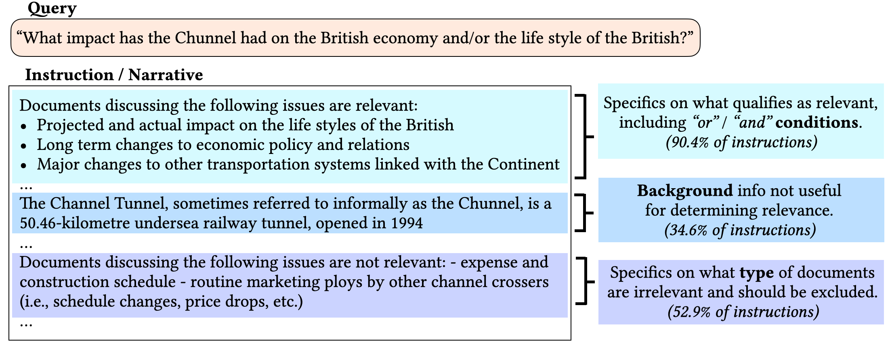
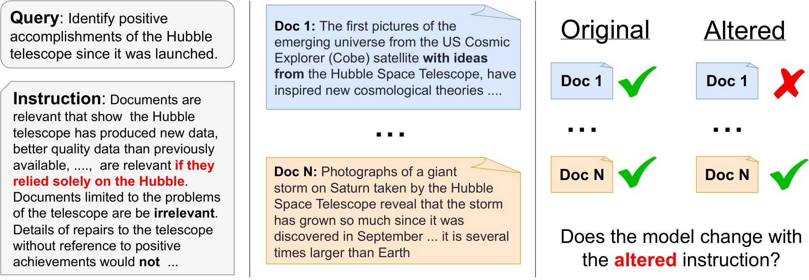
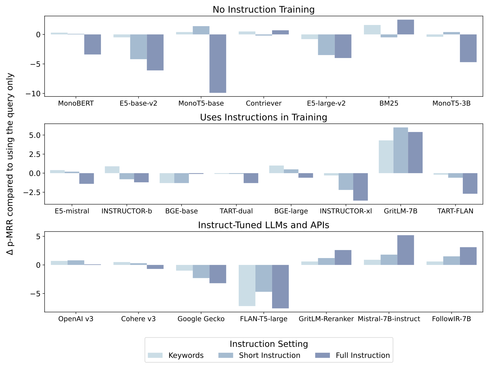

FollowIR: Evaluating and Teaching Information Retrieval Models to Follow Instructions / 全文中英对照¶
来源：arXiv:2403.15246v3。英文段落后紧接中文，覆盖所取 HTML 版本的主文、附录、图表、脚注与参考文献；公式、数字表和书目信息共用。中文以机器初译为底稿，进行了术语整理与结构核对，尚未逐句人工审定；遇到歧义请以紧邻英文和原论文为准。 原作版权归所列作者，许可见 原作许可；中文译文与版式改写在该许可条件下提供（涉及 SA 时沿用相同许可，涉及 NC 时仅限非商业使用）。
Authors and affiliations / 作者与机构¶
Orion Weller Email: oweller@cs.jhu.edu Benjamin Chang Sean MacAvaney Kyle Lo Arman Cohan Benjamin Van Durme Dawn Lawrie Luca Soldaini Affiliation: Johns Hopkins University Affiliation: Allen Institute for AI Affiliation: University of Glasgow Affiliation: Yale University
Abstract / 摘要¶
EN. Modern Language Models (LMs) are capable of following long and complex instructions that enable a large and diverse set of user requests. While Information Retrieval (IR) models use these LMs as the backbone of their architectures, virtually none of them allow users to provide detailed instructions alongside queries, thus limiting their ability to satisfy complex information needs. In this work, we study the use of instructions in IR systems. First, we introduce our dataset FollowIR , which contains a rigorous instruction evaluation benchmark as well as a training set for helping IR models learn to better follow real-world instructions. FollowIR repurposes detailed instructions—also known as narratives —developed for professional assessors to evaluate retrieval systems. In particular, we build our benchmark from three collections curated for shared tasks at the Text REtrieval Conference (TREC). These collections contains hundreds to thousands of labeled documents per query, making them suitable for our exploration. Through this process, we can measure how well IR models follow instructions, through a new pairwise evaluation framework. Our results indicate that existing retrieval models fail to correctly use instructions, using them for basic keywords and struggling to understand long-form information. However, we show that it is possible for IR models to learn to follow complex instructions: our new FollowIR -7B model has significant improvements after fine-tuning on our training set.
中. 现代语言模型 (LM) 能够遵循冗长而复杂的指令，从而满足大量不同的用户请求。虽然信息检索 (IR) 模型使用这些 LM 作为其架构的骨干，但实际上它们都不允许用户在查询的同时提供详细的指令，从而限制了它们满足复杂信息需求的能力。在这项工作中，我们研究了 IR 系统中指令的使用。首先，我们介绍我们的数据集 FollowIR ，它包含严格的指令评估基准以及帮助 IR 模型学习更好地遵循现实世界指令的训练集。 FollowIR 重新利用了为专业评估人员评估检索系统而开发的详细说明（也称为叙述）。特别是，我们根据文本检索会议 (TREC) 上为共享任务策划的三个集合构建了基准。这些集合包含每个查询数百到数千个标记文档，使它们适合我们的探索。通过这个过程，我们可以通过新的成对评估框架来衡量 IR 模型遵循指令的情况。我们的结果表明，现有的检索模型无法正确使用指令，将其用于基本关键字并难以理解长格式信息。然而，我们表明 IR 模型有可能学习遵循复杂的指令：我们新的 FollowIR -7B 模型在对我们的训练集进行微调后有了显着的改进。
Introduction / 简介¶
EN. Modern language models (LMs) are extensively tuned to be able to follow user instructions faithfully ( Chung et al., 2022 ; Ouyang et al., 2022a ; Rafailov et al., 2023 ; Wang et al., 2023b ; Ivison et al., 2023 ) and safely ( Bai et al., 2022 ; Bianchi et al., 2024 ) . Through these capabilities, LMs are able to successfully tackle a broad range of tasks ( Chiang et al., 2024 ; Liang et al., 2023 ; Yang et al., 2023 ; Jimenez et al., 2024 ; Zeng et al., 2023 ) , even when not explicitly fine-tuned for them.
中. 现代语言模型（LM）经过广泛调整，能够忠实地遵循用户指令（Chung et al., 2022；Ouyang et al., 2022a；Rafailov et al., 2023；Wang et al., 2023b；Ivison et al., 2023）且安全（Bai et al., 2022；Bianchi et al., 2024） ）。通过这些能力，LM 能够成功地解决广泛的任务（Chiang 等人，2024；Liang 等人，2023；Yang 等人，2023；Jimenez 等人，2024；Zeng 等人，2023），即使没有明确地对其进行微调。
EN. In contrast to the broader LM community, information retrieval (IR) practitioners and researchers have yet to fully exploit instruction-tuned models. Thanks to their ability to effectively estimate semantic similarity between query and documents, LMs have been adopted as the main backbone of neural retrieval architectures ( Karpukhin et al., 2020 ; Khattab & Zaharia, 2020 ; Reimers & Gurevych, 2019 ) . However, the vast majority of these systems are fine-tuned to operate exclusively as text spans similarity estimators ( Khattab & Zaharia, 2020 ; Izacard et al., 2021 ; Nogueira & Cho, 2019 ; Pradeep et al., 2023 ; Ma et al., 2023 ) . Moving past these ad-hoc search systems to retrieve with instructions would enable support for complex information needs. For example, imagine a researcher seeking to identify papers that must contain numerous qualities to be relevant (from a given venue, using a particular class of methods, etc.) while also making sure to avoid conditions that would make the document not-relevant (using negative sentiment, using datasets from a given domain, etc.).
中. 与更广泛的 LM 社区相比，信息检索 (IR) 从业者和研究人员尚未充分利用指令调整模型。由于能够有效估计查询和文档之间的语义相似性，LM 已被采用作为神经检索架构的主要支柱（Karpukhin 等人，2020；Khattab 和 Zaharia，2020；Reimers 和 Gurevych，2019）。然而，这些系统中的绝大多数都经过微调，专门作为文本跨度相似性估计器运行（Khattab & Zaharia，2020；Izacard et al.，2021；Nogueira & Cho，2019；Pradeep et al.，2023；Ma et al.，2023）。超越这些临时搜索系统以通过指令进行检索将能够支持复杂的信息需求。例如，想象一下，一名研究人员试图识别必须包含大量相关质量的论文（来自给定地点、使用特定类别的方法等），同时确保避免导致文档不相关的条件（使用负面情绪、使用给定领域的数据集等）。
EN. Recent work has started to move towards search with instructions, but this topic is still understudied with only a handful of papers ( Su et al., 2022 ; Asai et al., 2022 ; Muennighoff et al., 2024 ) . In particular, we find their use of instructions to be narrow: instructions are typically short (fewer than 10 words) and repetitive (only one instruction per dataset e.g. , Su et al. (2022) ; Asai et al. (2022) ; Li & Li (2023) ; Xiao et al. (2023) ). Further, these works lack evaluation datasets that explicitly measure instruction following—instead focusing on standard ad-hoc retrieval benchmarks.
中. 最近的工作已开始转向指令搜索，但该主题仍处于研究不足阶段，只有少数论文（Su et al., 2022; Asai et al., 2022; Muennighoff et al., 2024）。特别是，我们发现他们对指令的使用很狭窄：指令通常很短（少于 10 个单词）且重复（每个数据集只有一条指令，例如 Su et al. (2022) ；Asai et al. (2022) ；Li & Li (2023) ；Xiao et al. (2023) ）。此外，这些工作缺乏明确测量指令遵循的评估数据集，而是专注于标准的临时检索基准。
EN. To address these gaps we introduce FollowIR , which consists of (1) a benchmark that explicitly measures the instruction following ability of retrieval models, and (2) training data that includes diverse and realistic instructions. Our key intuition is to leverage instructions developed for professional annotators of IR systems in order to study the capabilities of instruction-following IR models. These instructions are used by annotators to judge document relevance for a given query. Fortunately, the IR field is rich with such data, as these instructions—also known as narratives ---are created for all queries in any well-constructed IR dataset. In particular, we use narratives developed for shared tasks at the Text REtrieval Conference 1 (TREC). These instructions are thorough and complex, including minute details about what makes a document relevant vs not-relevant. Thus if annotators can use these TREC instructions to annotate document relevance, so should instruction-following retrieval models (example query and instruction pairs are shown in Figures 1 and 2 ).
中. 为了解决这些差距，我们引入了 FollowIR ，它由 (1) 一个明确衡量检索模型的指令跟踪能力的基准，以及 (2) 包含多样化和现实指令的训练数据组成。我们的主要直觉是利用为 IR 系统的专业注释者开发的指令来研究遵循指令的 IR 模型的功能。注释器使用这些指令来判断给定查询的文档相关性。幸运的是，IR 领域富含此类数据，因为这些指令（也称为叙述）是为任何构造良好的 IR 数据集中的所有查询创建的。特别是，我们使用在文本检索会议 1 (TREC) 上为共享任务开发的叙述。这些说明详尽而复杂，包括有关文档相关与不相关的详细信息。因此，如果注释者可以使用这些 TREC 指令来注释文档相关性，那么指令跟踪检索模型也应该如此（示例查询和指令对如图 1 和图 2 所示）。
EN. We use three deeply-judged 2 TREC collections as the basis of our evaluation set: TREC Robust 2004 ( Voorhees, 2005 ) , TREC Common Core 2017 ( Allan et al., 2017 ) , and TREC News 2021 ( Soboroff et al., 2020 ) . These collections have been thoroughly annotated in order to evaluate recall in retrieval, with hundreds to thousands of documents judged as relevant or not-relevant. We take the instructions given to the professional annotators and alter them slightly, manually re-annotating the relevant documents. We then have paired instructions, which can be used to test how models respond to changing instructions; that is, we measure if models update the set of relevant documents to match to the new altered instructions.
中. 我们使用三个经过深度评审的 2 TREC 集合作为我们评估集的基础：TREC Robust 2004 (Voorhees, 2005)、TREC Common Core 2017 (Allan et al., 2017) 和 TREC News 2021 (Soboroff et al., 2020)。这些集合已经过彻底注释，以便评估检索时的回忆，数百到数千份文档被判断为相关或不相关。我们按照专业注释者的指示进行稍微修改，手动重新注释相关文档。然后，我们有配对指令，可用于测试模型如何响应不断变化的指令；也就是说，我们衡量模型是否更新相关文档集以匹配新的更改指令。

EN. Figure 1: How do standard retrieval queries differ from instructions (or narratives )? Instructions contain more specific details about what is relevant, include less directly-relevant background information, and often have directives about what documents are not relevant, using negation. %’s are how often a certain type of content appears in the original TREC instructions used in FollowIR .
中. 图 1：标准检索查询与指令（或叙述）有何不同？说明包含有关相关内容的更具体细节，包括不太直接相关的背景信息，并且通常使用否定来指示哪些文档不相关。 % 是某种类型的内容出现在 FollowIR 中使用的原始 TREC 指令中的频率。
EN. As there are no existing methods to compare pairwise queries in IR, we develop a new evaluation framework to do so, measuring rank-wise score changes (which we call \(p\) -MRR) of documents given a pair of different instructions with the same query. Results on FollowIR indicate that current models generally fail to follow instructions in retrieval unless they are 3B+ parameters or have not been trained for retrieval. Our analysis shows that these failures are due to two phenomena: (1) models are not used to long instructions, and (2) models use instruction for keyword search rather than as a definition of relevance.
中. 由于在 IR 中没有现有的方法来比较成对查询，因此我们开发了一个新的评估框架来执行此操作，测量给定具有相同查询的一对不同指令的文档的排名分数变化（我们称之为 \(p\) -MRR）。 FollowIR 的结果表明，当前模型通常无法遵循检索指令，除非它们是 3B+ 参数或尚未经过检索训练。我们的分析表明，这些失败是由于两种现象造成的：（1）模型不习惯长指令，（2）模型使用指令进行关键字搜索而不是作为相关性的定义。
EN. To further progress in building retrieval models that can understand instructions, we build a training set of real-world human-used instructions and fine-tune a model on them ( FollowIR -7B). Our results show marked improvement on FollowIR for both standard IR metrics and for \(p\) -MRR, indicating a starting point for future progress on instruction following.
中. 为了进一步构建能够理解指令的检索模型，我们构建了一组现实世界中人类使用的指令的训练集，并对其模型进行了微调（FollowIR -7B）。我们的结果显示，FollowIR 在标准 IR 指标和 \(p\) -MRR 方面都有显着改进，这表明指令跟踪的未来进展的起点。
EN. In summary, we contribute the following: (1) a benchmark for evaluating instruction following in retrieval ( FollowIR ) consisting of human annotations on top of three already highly-judged corpora, (2) analysis of why current models fail to understand instructions, and (3) training data for teaching retrieval models to follow instructions along with a new open-sourced IR model, FollowIR -7B, that can handle long instructions in IR. 3
中. 总之，我们贡献了以下内容：（1）评估检索中指令遵循的基准（FollowIR），由三个已经经过高度评价的语料库之上的人工注释组成，（2）分析为什么当前模型无法理解指令，以及（3）用于教学检索模型遵循指令的训练数据以及新的开源 IR 模型 FollowIR -7B，该模型可以处理 IR 中的长指令。 3

EN. Figure 2: A visual depiction of the pairwise evaluation framework: models are evaluated on the query with the original instruction, and then on the query with the altered instruction . If the model correctly understands the instructions, it will change which documents are relevant w.r.t. the alteration (right). Note that the real-world instructions (left) given to TREC annotators includes fine-grained details about what relevance is, as well as instructions containing negation (in bold ).
中. 图 2：成对评估框架的直观描述：使用原始指令对查询进行模型评估，然后使用更改后的指令对查询进行评估。如果模型正确理解了指令，它将改变哪些文档是相关的。变更（右）。请注意，提供给 TREC 注释器的现实世界指令（左）包括有关相关性的细粒度细节，以及包含否定的指令（以粗体显示）。
Related Work / 相关工作¶
TREC Conferences / TREC会议¶
EN. The United States National Institute of Science and Technology (NIST) created the TREC organization in 1993. Each year TREC sponsors many tracks , or shared tasks, on a given dataset. These tracks range from a variety of topics: anywhere from standard ad-hoc retrieval on news ( Soboroff et al., 2018 ; Soboroff, 2021 ) to more complex domains such as legal retrieval ( Baron et al., 2006 ; Oard et al., 2008 ) , or retrieval-augmented generation/report-generation ( Lawrie et al., 2024 ) .
中. 美国国家科学技术研究院 (NIST) 于 1993 年创建了 TREC 组织。TREC 每年都会赞助给定数据集上的许多跟踪或共享任务。这些轨道涵盖各种主题：从标准的即席新闻检索（Soboroff 等人，2018 年；Soboroff，2021 年）到更复杂的领域，例如法律检索（Baron 等人，2006 年；Oard 等人，2008 年）或检索增强生成/报告生成（Lawrie 等人，2024 年）。
EN. As part of this process, NIST sponsors annotations for these collections. Typically, this is done by pooling a set of results ( runs ) from a variety of retrieval models and then annotating them in rank order until funding runs out. To help facilitate annotation, track organizers provide a narrative (or instruction) for each query that will be given to the annotators—however, IR models are only ever given the query. As evaluating total recall would require annotating every document in the collection for every query (which is not feasible for collections with millions of documents), recall error is tested using post-hoc sampling and annotation. Although not every query and document pair can be evaluated, recall for queries is very high. We build off the rigorous evaluation done at TREC by using several of their collections to build FollowIR .
中. 作为此过程的一部分，NIST 为这些集合提供注释。通常，这是通过汇集来自各种检索模型的一组结果（运行）然后按排名顺序对其进行注释直到资金用完来完成的。为了帮助促进注释，赛道组织者为将提供给注释者的每个查询提供叙述（或说明），但是，IR 模型仅获得查询。由于评估总召回率需要为每个查询注释集合中的每个文档（这对于包含数百万文档的集合是不可行的），因此使用事后采样和注释来测试召回错误。尽管并非每个查询和文档对都可以评估，但查询的召回率非常高。我们在 TREC 进行的严格评估的基础上，使用他们的几个集合来构建 FollowIR 。
Instructions for LMs / LM 说明¶
EN. Instruction-following LMs have been popularized by models such as InstructGPT ( Ouyang et al., 2022a ) , FLAN ( Wei et al., 2022 ) , and T0 ( Sanh et al., 2022 ) . They have become a large area of interest for the natural language processing community ( Touvron et al., 2023a ; Jiang et al., 2023 ; Groeneveld et al., 2024 ; Black et al., 2022 ) . There has been much work in evaluating if they can generalize to new instructions ( Weller et al., 2020 ; Wang et al., 2022c ; Ouyang et al., 2022b ) , if we can train them to follow instructions without human-annotated data ( Wang et al., 2022b ; Qin et al., 2023 ) , and applying them to various domains ( Zhao et al., 2021 ; Singhal et al., 2023 ; Shaghaghian et al., 2020 ) . As the IR community uses LMs in their pipelines, we seek to broaden the scope of IR to include instructions, aligning it with the broader NLP community.
中. 指令跟随的语言模型已经通过 InstructGPT (Ouyang et al., 2022a)、FLAN (Wei et al., 2022) 和 T0 (Sanh et al., 2022) 等模型得到普及。它们已成为自然语言处理界的一大兴趣领域（Touvron 等人，2023a；Jiang 等人，2023；Groeneveld 等人，2024；Black 等人，2022）。我们已经做了很多工作来评估它们是否可以泛化到新指令（Weller et al., 2020；Wang et al., 2022c；Ouyang et al., 2022b），是否可以训练它们在没有人工注释数据的情况下遵循指令（Wang et al., 2022b；Qin et al., 2023），并将它们应用到各个领域（Zhao et al., 2023）。 2021；Singhal 等人，2023；Shaghaghian 等人，2020）。由于 IR 社区在其流程中使用 LM，我们寻求扩大 IR 的范围以包含指令，使其与更广泛的 NLP 社区保持一致。
Instructions for Retrieval / 检索说明¶
EN. Using instructions in retrieval is a nascent area of exploration. Su et al. (2022) and Asai et al. (2022) were two of the earliest works that trained a retrieval model to use instructions along with the query. However, these instructions are typically very short, such as “Retrieve a Wikipedia paragraph that answers this question." Recent work incorporates instructions in smaller models ( Xiao et al., 2023 ; Chen et al., 2023 ; Chen et al., 2024 ) as well as others which use Llama ( Touvron et al., 2023a ; Weller et al., 2023 ) or Mistral ( Jiang et al., 2023 ) as the backbone of a larger retrieval model that can use instructions: GritLM ( Muennighoff et al., 2024 ) trains Mistral to do both generation and embedding, while Wang et al. (2023a) uses Mistral for embeddings only.
中. 在检索中使用指令是一个新兴的探索领域。苏等人。 （2022）和浅井等人。 （2022）是训练检索模型使用指令和查询的最早的两篇著作。然而，这些说明通常非常短，例如“检索回答此问题的维基百科段落”。最近的工作结合了较小模型中的指令（Xiao et al., 2023；Chen et al., 2023；Chen et al., 2024）以及其他使用 Llama（Touvron et al., 2023a；Weller et al., 2023）或 Mistral（Jiang et al., 2023）作为可以使用指令的更大检索模型的骨干的模型：GritLM（ Muennighoff 等人，2024）训练 Mistral 进行生成和嵌入，而 Wang 等人。 (2023a) 仅使用 Mistral 进行嵌入。
EN. Despite this flurry of activity, these efforts do not have an explicit instruction-related retrieval benchmark to evaluate on. Instead, they evaluate on standard retrieval benchmark suites such as MTEB ( Muennighoff et al., 2022 ) and BEIR ( Thakur et al., 2021 ) which do not contain instructions. Thus, these newer instruction retrieval models hand-write a few instructions, where typically each instruction is applied to an entire dataset, irrespective of the query. This makes these instructions generic: focused only on the task format, format of the “document" (paragraph, sentence, etc.), and the broad domain. Note that because of this, no current instructions contain any extra background information or negation ( Weller et al., 2024 ) which are commonly found in real-world instructions (see Figure 1 for an example of these differences).
中. 尽管开展了一系列活动，但这些努力并没有明确的与指令相关的检索基准来评估。相反，他们对标准检索基准套件进行评估，例如不包含指令的 MTEB（Muennighoff 等人，2022）和 BEIR（Thakur 等人，2021）。因此，这些较新的指令检索模型手写一些指令，其中通常每个指令都应用于整个数据集，而不考虑查询。这使得这些说明变得通用：仅关注任务格式、“文档”的格式（段落、句子等）以及广泛的领域。请注意，因此，当前指令不包含任何额外的背景信息或否定（Weller et al., 2024），这些信息或否定在现实世界的指令中很常见（有关这些差异的示例，请参见图 1）。
EN. In work concurrent to ours, Oh et al. (2024) also propose a dataset to evaluate instructions in retrieval models. Their dataset uses the MS MARCO collection ( Nguyen et al., 2016 ) , and differs in several crucial aspects: it only has one relevant document per query ( e.g. , sparsely judged), is GPT-4 generated and validated, focuses on the background of the user (“I am a school teaching looking for …"), and evaluates using the lowest score over \(N\) instructions for the same query (measuring robustness). In contrast, we use highly-judged corpora to ensure we can measure recall, use professionally generated instructions, have human-validated relevance judgements, propose a new paired evaluation protocol, and provide a training dataset and model for teaching instruction-following.
中. 在与我们同时进行的工作中，Oh 等人。 （2024）还提出了一个数据集来评估检索模型中的指令。他们的数据集使用 MS MARCO 集合（Nguyen 等人，2016），并且在几个关键方面有所不同：每个查询只有一个相关文档（例如，稀疏地判断），是 GPT-4 生成和验证的，专注于用户的背景（“我是一所正在寻找……的学校教学”），并使用 \(N\) 指令的最低分数对同一查询进行评估（衡量稳健性）。相比之下，我们使用经过高度评价的语料库来确保我们可以测量召回率，使用专业生成的指令，进行人工验证的相关性判断，提出新的配对评估协议，并提供用于教学遵循指令的训练数据集和模型。
| Dataset 数据集 |
# \(Q\) | $\vert Q\vert $ | $\vert I\vert $ | Rel. D/Q 相对。数据/Q |
# \(Q\) | $\vert I\vert $ | Rel. D/Q 相对。数据/Q |
|---|---|---|---|---|---|---|---|
| TREC News ’21 ( Soboroff et al., 2020 ) TREC 新闻 ’21（Soboroff 等人，2020） |
50 | 15.3 | 40.1 | 50.1 | 32 | 46.9 | 19.2 |
| TREC Core ’17 ( Allan et al., 2017 ) TREC Core ’17（Allan 等人，2017） |
50 | 16.6 | 44.0 | 180.0 | 20 | 53.5 | 32.7 |
| TREC Robust ’04 ( Voorhees, 2005 ) TREC Robust ’04（Voorhees，2005） |
249 | 11.9 | 68.2 | 69.9 | 52 | 75.2 | 19.8 |
EN. Table 1: FollowIR evaluation set statistics before (left) and after (right) annotation. We use a subset of the queries in three popular TREC tracks for variety in queries and documents. \(|Q|\) is the word length of the queries and \(|I|\) is the word length of the instructions. Rel. D/Q indicates the number of relevant annotated documents in the collection, excluding irrelevant annotations. As designed, there are less relevantly-judged documents in the FollowIR portion (as the annotations change the relevance of documents on purpose for evaluation).
中. 表 1：注释前（左）和注释后（右）的 FollowIR 评估集统计数据。我们使用三个流行的 TREC 轨道中的查询子集来实现查询和文档的多样性。 \(|Q|\) 是查询的字长，\(|I|\) 是指令的字长。相对。 D/Q表示集合中相关注释文档的数量，排除不相关注释。按照设计，FollowIR 部分中相关性判断的文档较少（因为注释故意改变了评估文档的相关性）。
Building FollowIR / 构建FollowIR¶
EN. We derive FollowIR from three TREC collections: TREC News 2021 (derived from the Washington Post v4 corpus; Soboroff et al., 2020 ), TREC Robust 2004 (from news articles in Disks 4 and 5 collections; Voorhees, 2005 ), and TREC Common Core 2017 (from the New York Times Annotated corpus; Allan et al., 2017 ). Each of these was professionally assessed to include hundreds of annotations per query (see Table 1 ), with 50-180 relevant documents per query on average (and many more not-relevant annotations).
中. 我们从三个 TREC 集合中得出 FollowIR：TREC News 2021（来自 Washington Post v4 语料库；Soboroff 等人，2020）、TREC Robust 2004（来自 Disks 4 和 5 集合中的新闻文章；Voorhees，2005）和 TREC Common Core 2017（来自纽约时报注释语料库；Allan 等人， 2017）。其中每一个都经过专业评估，每个查询包含数百个注释（参见表 1），每个查询平均有 50-180 个相关文档（以及更多不相关的注释）。
EN. Each of these TREC tracks includes instructions for the professional annotators that we now also give to the models. Although using these alone can provide some indication of how well models can follow instructions, it doesn’t explicitly test their instruction following ability. To more carefully isolate this in our benchmark, we test whether models can respond to small changes in the instruction.
中. 每个 TREC 轨道都包含针对专业注释者的说明，我们现在也向模型提供这些说明。尽管单独使用这些可以提供一些关于模型遵循指令的程度的指示，但它并没有明确测试它们的指令遵循能力。为了在我们的基准测试中更仔细地隔离这一点，我们测试模型是否可以响应指令中的微小变化。
EN. To accomplish this, we ask two expert annotators to modify the TREC instructions. However, doing this in a naive way would require re-annotating all the document judgements, a non-trivial task requiring immense annotation efforts. 4 Instead, we task the annotators with making instructions more specific by including additional constraints that narrow the relevance definition. These transformations cause some previously relevant documents to become non-relevant without introducing any new relevant documents from the pool. Therefore, only those documents that were deemed relevant by the original TREC assessors need to be re-annotated. This makes the annotation tractable, with only dozens or hundreds of documents to re-annotate per query instead of a collection of thousands.
中. 为了实现这一目标，我们请两位专家注释者修改 TREC 指令。然而，以简单的方式执行此操作将需要重新注释所有文档判断，这是一项需要大量注释工作的艰巨任务。 4 相反，我们要求注释者通过包含缩小相关性定义的附加约束来使指令更加具体。这些转换导致一些先前相关的文档变得不相关，而不会从池中引入任何新的相关文档。因此，只有那些被原始 TREC 评估员认为相关的文档才需要重新注释。这使得注释变得易于处理，每个查询只需重新注释数十或数百个文档，而不是数千个文档的集合。
EN. We annotate a subset of the original TREC queries due to cost and overlap: we sample 50 queries from TREC Robust 2004 that do not overlap with TREC Common Core (as Common Core used 50 queries from Robust04 on a new collection), and 30 queries from TREC News 2021. Table 1 shows dataset statistics of judged documents and the final benchmark size. Annotators were asked to change the instructions so that the number of relevant documents was cut roughly in half, thus including a sizeable number of changed relevance judgements. We note that although the number of queries seems small by NLP standards, 30-50 queries is both effective ( Webber et al., 2008 ) and standard in the IR community due to the expense of careful annotation over many documents per query.
中. 由于成本和重叠，我们对原始 TREC 查询的子集进行了注释：我们从 TREC Robust 2004 中抽取了 50 个与 TREC Common Core 不重叠的查询（因为 Common Core 在新集合上使用了 Robust04 中的 50 个查询），并从 TREC News 2021 中抽取了 30 个查询。表 1 显示了判断文档的数据集统计信息和最终基准大小。注释者被要求更改说明，以便相关文档的数量大约减少一半，从而包括大量更改的相关性判断。我们注意到，尽管按照 NLP 标准，查询数量似乎很小，但 30-50 个查询既有效（Webber 等人，2008），又是 IR 社区的标准，因为每个查询需要对许多文档进行仔细注释。
EN. Due to differences in retriever quality, if we evaluate by searching over the full collection, each model will retrieve a different number of relevant documents. However, because we evaluate instruction following based on changing the document relevance, models that do poorly in the initial retrieval will have fewer documents which change relevance in the instruction-following evaluation. To rectify this, we instead turn to a reranking task where we include all relevant documents, and use a pool of five models 5 to select the top non-relevant documents. To be able to freely distribute the data due to fair-use laws, we chunk the documents into 400-word passages with 200-word overlap and select the highest scoring passages using MaxP ( Dai & Callan, 2019 ) . This enables us to distribute our data, which we do by extending the MTEB evaluation framework ( Muennighoff et al., 2022 ) .
中. 由于检索器质量的差异，如果我们通过搜索整个集合来进行评估，每个模型将检索到不同数量的相关文档。然而，由于我们根据改变文档相关性来评估指令遵循，因此在初始检索中表现不佳的模型将具有较少的在指令遵循评估中改变相关性的文档。为了纠正这个问题，我们转而进行重新排名任务，其中包括所有相关文档，并使用五个模型 5 的池来选择最不相关的文档。为了能够根据合理使用法自由分发数据，我们将文档分成 400 字的段落，其中有 200 字重叠，并使用 MaxP 选择得分最高的段落（Dai & Callan，2019）。这使我们能够通过扩展 MTEB 评估框架来分发数据（Muennighoff 等人，2022）。
Evaluation Metrics for FollowIR / FollowIR 的评估指标¶
EN. Our benchmark provides two ways of measuring instruction following: (1) standard retrieval metrics when using the instructions with the queries and (2) pairwise evaluation of instruction following. For (1), we use typical IR evaluation metrics but use the instruction along with the query: these metrics are mean average precision (MAP) for Core17/Robust04 and normalized discounted cumulative gain at 5 (nDCG@5) for News21. For (2) we use our novel pairwise evaluation metric that measures the delta in scores when following the modified instructions instead of the original. 6
中. 我们的基准测试提供了两种测量指令跟随的方法：（1）将指令与查询一起使用时的标准检索指标；（2）指令跟随的成对评估。对于 (1)，我们使用典型的 IR 评估指标，但将指令与查询一起使用：这些指标是 Core17/Robust04 的平均精度 (MAP) 和 News21 的归一化贴现累积增益 5 (nDCG@5)。对于（2），我们使用新颖的成对评估指标来测量遵循修改后的指令而不是原始指令时分数的增量。 6
EN. Our new pairwise evaluation metric, \(p\) -MRR, measures rank-wise changes between queries. In developing this metric we had the following desiderata: it should compare the results of the original instruction to those of the new instruction, it should have a standardized range from worst possible change in instruction-following score ( i.e. , \(-1\) ) to best possible instruction-following score ( i.e. , \(1\) ) with an option for no change when using different instructions ( i.e. , \(0\) ), and finally should take into account the document rank so that changes from rank 1 to rank 2 are more prominent than changes from rank 99 to 100. Given the above qualifications, we use the following equation applied to each changed relevance document per query (where MRR is mean reciprocal rank, \(R_{og}\) is the rank of the document when using the original instruction and \(R_{new}\) is the new rank):
中. 我们新的成对评估指标 \(p\) -MRR 可衡量查询之间的排名变化。在开发这个指标时，我们有以下需求：它应该将原始指令的结果与新指令的结果进行比较，它应该有一个标准化范围，从指令跟随分数的最差可能变化（即 \(-1\) ）到最佳可能的指令跟随分数（即 \(1\) ），并可以选择在使用不同指令时不改变（即， \(0\) ），最后应该考虑文档排名，以便从排名 1 到排名 2 的变化比从排名 99 到 100 的变化更加突出。考虑到上述条件，我们将以下等式应用于每个查询的每个更改的相关文档（其中 MRR 是平均倒数排名，\(R_{og}\) 是使用原始指令时文档的排名，\(R_{new}\) 是新排名）：
EN. For the final score, we average first within a given query and then over all queries in the corpora— i.e. , macro-averaging across queries, to handle the different number of relevant documents per query.
中. 对于最终分数，我们首先在给定查询内进行平均，然后对语料库中的所有查询进行平均，即跨查询进行宏观平均，以处理每个查询的不同数量的相关文档。
Evaluating Instruction Following / 评估指令遵循情况¶
EN. In this section we describe the models we evaluate, their results on FollowIR , and ablations performed to better understand the behavior of current models.
中. 在本节中，我们描述了我们评估的模型、它们在 FollowIR 上的结果，以及为更好地理解当前模型的行为而进行的消融。
Evaluation Settings / 评估设置¶
EN. We evaluate a wide variety of IR models (trained with and without instructions), including neural models ranging from 100 million to 7 billion parameters. We evaluate on the original TREC instructions in the FollowIR benchmark and then on the new instructions, showing both standard IR metrics and the new pairwise metric \(p\) -MRR. We group models into four categories:
中. 我们评估各种 IR 模型（使用或不使用指令进行训练），包括包含 1 亿到 70 亿个参数的神经模型。我们在 FollowIR 基准测试中评估原始 TREC 指令，然后评估新指令，显示标准 IR 指标和新的成对指标 \(p\) -MRR。我们将模型分为四类：
No Instructions in Training / 培训中无说明¶
EN. These retrieval models did not see instructions in training and typically aren’t given them: this includes Contriever ( Izacard et al., 2021 ) , E5 ( Wang et al., 2022a ) , MonoBERT Nogueira et al. (2019) , MonoT5 ( Nogueira et al., 2020 ) , and BM25 ( Robertson et al., 1995 ) .
中. 这些检索模型在训练中没有看到指令，通常也不会给出指令：这包括 Contriever (Izacard et al., 2021)、E5 (Wang et al., 2022a)、MonoBERT Nogueira et al.。 (2019)、MonoT5 (Nogueira 等人，2020) 和 BM25 (Robertson 等人，1995)。
| Robust04 鲁棒04 |
Robust04 鲁棒04 |
News21 新闻21 |
News21 新闻21 |
Core17 核心17 |
Core17 核心17 |
Average 平均 |
Average 平均 |
||
|---|---|---|---|---|---|---|---|---|---|
| Model 型号 |
Model 型号 |
MAP | \(p\) -MRR \(p\)-MRR |
nDCG 直流电图 |
\(p\) -MRR \(p\)-MRR |
MAP | \(p\) -MRR \(p\)-MRR |
Score 分数 |
\(p\) -MRR \(p\)-MRR |
| No-Instruction IR 无指令红外 |
E5-base-v2 E5-基础-v2 |
13.4 | -6.7 | 20.9 | -2.0 | 14.0 | -2.9 | 16.1 | -3.9 |
| No-Instruction IR 无指令红外 |
Contriever 发明家 |
19.7 | -6.1 | 22.9 | -2.8 | 15.3 | -2.5 | 19.3 | -3.8 |
| No-Instruction IR 无指令红外 |
MonoBERT | 21.0 | -9.4 | 25.1 | -0.8 | 18.4 | -0.2 | 21.5 | -3.5 |
| No-Instruction IR 无指令红外 |
BM25 | 12.1 | -3.1 | 19.3 | -2.1 | 8.1 | -1.1 | 13.2 | -2.1 |
| No-Instruction IR 无指令红外 |
MonoT5-base MonoT5基 |
15.7 | -6.2 | 11.0 | +5.0 | 12.2 | -4.1 | 13.0 | -1.8 |
| No-Instruction IR 无指令红外 |
E5-large-v2 E5-大-v2 |
17.4 | -4.2 | 24.3 | +0.9 | 17.0 | +0.1 | 19.6 | -1.1 |
| No-Instruction IR 无指令红外 |
MonoT5-3B 单T5-3B |
27.3 | +4.0 | 16.5 | +1.8 | 18.2 | +1.8 | 20.7 | +2.5 |
| Instruction-IR 指令IR |
TART-Contriever | 14.3 | -9.0 | 21.8 | -3.0 | 13.3 | -3.0 | 16.5 | -5.0 |
| Instruction-IR 指令IR |
INSTRUCTOR-base 导师基地 |
17.2 | -10.4 | 22.1 | -1.8 | 15.5 | -1.1 | 18.3 | -4.4 |
| Instruction-IR 指令IR |
E5-mistral E5-米斯特拉尔 |
23.1 | -9.6 | 27.8 | -0.9 | 18.3 | +0.1 | 23.1 | -3.5 |
| Instruction-IR 指令IR |
BGE-base BGE基 |
16.8 | -6.5 | 20.0 | -0.1 | 14.6 | -2.7 | 17.1 | -3.1 |
| Instruction-IR 指令IR |
INSTRUCTOR-xl 教练-xl |
19.7 | -8.1 | 26.1 | -0.9 | 16.8 | +0.7 | 20.9 | -2.8 |
| Instruction-IR 指令IR |
BGE-large BGE-大型 |
17.5 | -7.8 | 22.3 | +0.6 | 15.0 | +0.1 | 18.3 | -2.4 |
| Instruction-IR 指令IR |
GritLM-7B 砂砾LM-7B |
28.6 | -1.7 | 24.4 | -1.0 | 20.8 | +2.6 | 24.6 | -0.0 |
| TART-FLAN-T5-xl 挞-果馅饼-T5-xl |
24.6 | -0.7 | 12.8 | +2.0 | 17.0 | +2.8 | 18.1 | +1.4 | |
| APIs API |
OpenAI v3 Large OpenAI v3 大型 |
27.2 | -5.8 | 27.2 | -2.0 | 21.6 | -0.2 | 25.3 | -2.7 |
| APIs API |
Cohere v3 English Cohere v3 英语 |
22.3 | -3.6 | 28.3 | +0.2 | 20.6 | +2.8 | 23.7 | -0.2 |
| APIs API |
Google Gecko 谷歌壁虎 |
23.3 | -2.4 | 29.5 | +3.9 | 23.2 | +5.4 | 25.3 | +2.3 |
| Instruct LMs 指导 LM |
FLAN-T5-base FLAN-T5-底座 |
6.4 | +5.3 | 6.1 | -0.1 | 6.5 | -3.3 | 6.3 | +0.6 |
| Instruct LMs 指导 LM |
Llama-2-7B-chat Llama-2-7B-聊天 |
6.3 | +2.0 | 1.7 | +0.2 | 5.4 | +2.8 | 4.5 | +1.7 |
| Instruct LMs 指导 LM |
FLAN-T5-large FLAN-T5-大号 |
14.7 | +3.9 | 8.0 | +8.9 | 11.4 | +1.3 | 11.4 | +4.7 |
| Instruct LMs 指导 LM |
GritLM-Reranker GritLM-重排序器 |
9.7 | +6.1 | 10.2 | +3.4 | 9.8 | +8.6 | 9.9 | +6.0 |
| Instruct LMs 指导 LM |
Mistral-7B-instruct Mistral-7B-指令 |
23.2 | +12.6 | 27.2 | +4.8 | 19.7 | +13.0 | 23.4 | +10.1 |
| FollowIR-7B 关注IR-7B |
24.8 | +13.7 | 29.6 | +6.3 | 20.0 | +16.5 | 24.8 | +12.2 |
EN. Table 2: Evaluating instruction-following on FollowIR . Introduced in this work, \(p\) -MRR is a pairwise evaluation metric measuring instruction following when instructions change, ranging from \(-100\) to \(100\) (higher is better). Generally only models with over 3B parameters or instruction-tuned LMs that haven’t been trained on retrieval tasks show success at following retrieval instruction.
中. 表 2：评估 FollowIR 上的指令跟踪。本工作中引入的\(p\) -MRR是当指令改变时测量指令所遵循的成对评估度量，范围从\(-100\)到\(100\)（越高越好）。一般来说，只有参数超过 3B 的模型或未经检索任务训练的指令调整 LM 才能成功遵循检索指令。
Instructions in IR Training / IR 培训说明¶
EN. Most retrieval models using instructions received roughly one instruction per retrieval dataset, which generally defined the domain ( e.g. , “Financial"), document size (sentence, passage, etc.), and task format. This includes INSTRUCTOR models ( Su et al., 2022 ) , the bi-encoder TART model trained from Contriever ( Asai et al., 2022 ) , the reranker TART trained from FLAN-T5 ( Chung et al., 2022 ) , E5 Mistral-Instruct ( Wang et al., 2023a ) , and GritLM ( Muennighoff et al., 2024 ) . We also include BGE models ( Xiao et al., 2023 ) in this category, although they are trained with only one instruction total for each broad task (retrieval, clustering, etc.).
中. 大多数使用指令的检索模型大约为每个检索数据集接收一条指令，该指令通常定义领域（例如，“金融”）、文档大小（句子、段落等）和任务格式。这包括 INSTRUCTOR 模型（Su 等人，2022）、从 Contriever 训练的双编码器 TART 模型（Asai 等人，2022）、从 FLAN-T5 训练的重排序 TART（Chung 等人，2022）、E5 Mistral-Instruct（Wang 等人，2023a）和 GritLM（Muennighoff 等人）等，2024）。我们还将 BGE 模型（Xiao 等人，2023）纳入这一类别，尽管它们针对每项广泛任务（检索、聚类等）仅使用一条指令进行训练。
API Models / API模型¶
EN. We use three of the best performing API embedding models: Cohere’s v3 English, Google’s Gecko ( Lee et al., 2024 ) and OpenAI’s Text-Embedding-v3-Large. It is mostly unknown what these models’ training procedures were—including if they were trained on instructions or not—thus we place them in a distinct category. However, we note that Google’s model did explicitly train with instructions, as mentioned in their technical report.
中. 我们使用三种性能最佳的 API 嵌入模型：Cohere 的 v3 English、Google 的 Gecko（Lee 等人，2024）和 OpenAI 的 Text-Embedding-v3-Large。人们大多不知道这些模型的训练程序是什么——包括它们是否按照指令进行训练——因此我们将它们归入一个不同的类别。然而，我们注意到谷歌的模型确实按照指令进行了明确的训练，正如他们的技术报告中提到的。
Instruction-Tuned LMs / 指令调整的 LM¶
EN. We also evaluate several instruction-tuned LMs to be used as rerankers, including FLAN-T5 ( Chung et al., 2022 ) , Llama v2 ( Touvron et al., 2023b ) , and Mistral-Instruct-v0.2 ( Jiang et al., 2023 ) . We evaluate these models in the same fashion as MonoT5 rerankers, comparing the true and false tokens. Note that these models were not trained on any retrieval-specific data.
中. 我们还评估了几种用作重新排序器的指令调整 LM，包括 FLAN-T5（Chung 等人，2022）、Llama v2（Touvron 等人，2023b）和 Mistral-Instruct-v0.2（Jiang 等人，2023）。我们以与 MonoT5 重新排名相同的方式评估这些模型，比较真假标记。请注意，这些模型没有接受任何特定于检索的数据的训练。
Results / 结果¶
EN. Table 2 shows the main results on FollowIR , with the standard IR score shown (either MAP or nDCG@5) as well as the pairwise evaluation metric, \(p\) -MRR.
中. 表 2 显示了 FollowIR 的主要结果，其中显示了标准 IR 分数（MAP 或 nDCG@5）以及成对评估指标 \(p\) -MRR。
No-Instruction IR Models / 无指令 IR 模型¶
EN. We see that the no-instruction models range widely in standard IR metrics (in terms of nDCG@5 and MAP) but generally have negative scores for \(p\) -MRR (up to \(-3.9\) ). The only non-instruction model to score positively on average is MonoT5-3B (+2.5 \(p\) -MRR).
中. 我们看到无指令模型在标准 IR 指标（就 nDCG@5 和 MAP 而言）方面范围广泛，但 \(p\) -MRR 通常具有负分数（最高为 \(-3.9\) ）。唯一平均得分为正的非指令模型是 MonoT5-3B (+2.5 \(p\) -MRR)。
Instruction IR Models / 指令 IR 模型¶
EN. We again see that these models have generally negative scores, with the exception being GritLM (with scores averaging roughly zero) and TART-FLAN-T5-xl which has slightly positive scores for two of the three datasets (with an average of +1.4 \(p\) -MRR).
中. 我们再次看到这些模型通常具有负分数，但 GritLM（平均分数大约为零）和 TART-FLAN-T5-xl 除外，它在三个数据集中的两个数据集中具有略为正的分数（平均为 +1.4 \(p\) -MRR）。

EN. Figure 3: Score difference between using no instructions to using instructions formatted as keywords, short text, or the full text. While models that can correctly use instructions see gains with the additional information, most other models see decreasing performance as instruction length increases.
中. 图 3：不使用说明与使用关键字、短文本或全文格式的说明之间的得分差异。虽然可以正确使用指令的模型会通过附加信息获得收益，但大多数其他模型会随着指令长度的增加而降低性能。
API Models / API模型¶
EN. We see that the API models perform strongly in terms of standard IR metrics, with OpenAI’s and Google’s models performing the highest overall. However, Cohere’s and OpenAI’s models perform poorly at instruction-following with negative scores ( \(-0.2\) and \(-2.7\) on average, respectively) whereas Google Gecko has positive scores (+2.3) likely a result of training on more instruction-focused data.
中. 我们看到 API 模型在标准 IR 指标方面表现强劲，其中 OpenAI 和 Google 的模型总体表现最高。然而，Cohere 和 OpenAI 的模型在指令遵循方面表现不佳，得分为负（平均分别为 \(-0.2\) 和 \(-2.7\)），而 Google Gecko 的得分为正（+2.3），这可能是在更多以指令为中心的数据上进行训练的结果。
Instruct-Tuned LMs / 指令调整 LM¶
EN. In contrast to the previous results, all instruction-tuned LMs show positive results for instruction following, although they have the widest range of performance using standard IR metrics (ranging from very poor scores to some of the higher scores). We see that the best performing model in this category is FollowIR –7B, which we describe in more detail in Section 5 .
中. 与之前的结果相比，所有指令调整的 LM 在指令遵循方面都显示出积极的结果，尽管它们使用标准 IR 指标具有最广泛的性能范围（从非常差的分数到一些较高的分数）。我们看到该类别中表现最好的模型是 FollowIR –7B，我们将在第 5 节中对其进行更详细的描述。
Overall / 整体¶
EN. We see that the only models that show positive results at following instructions are either IR models with over 3B parameters or those that have been explicitly trained to follow instructions ( e.g. FLAN-T5), without any retrieval-specific supervision. This aligns with work in the natural language processing community which has shown that the instruction-following ability improves with scale ( Brown et al., 2020 ) and supervised instruction-tuning ( Longpre et al., 2023 ) .
中. 我们发现，在遵循指令时显示出积极结果的唯一模型要么是具有超过 3B 参数的 IR 模型，要么是经过明确训练以遵循指令的模型（例如 FLAN-T5），而没有任何特定于检索的监督。这与自然语言处理社区的工作相一致，自然语言处理社区的工作表明，指令跟踪能力随着规模的扩大（Brown 等人，2020）和监督指令调整（Longpre 等人，2023）而提高。
Analysis / 分析¶
EN. Why do so many models fail to correctly follow instructions when they do well on typical IR metrics such as nDCG and MAP? We answer this question by ablating several components that may impact results: (1) whether IR models are not used to text that cannot be used for simple keyword search ( i.e. instructions) and (2) whether they are unused to the length of the longer instructions (as current instruction IR models have been trained on much shorter instructions).
中. 为什么许多模型在典型的 IR 指标（例如 nDCG 和 MAP）上表现良好时却无法正确遵循指令？我们通过消除可能影响结果的几个组件来回答这个问题：（1）IR 模型是否不用于不能用于简单关键字搜索的文本（即指令），以及（2）它们是否不用于较长指令的长度（因为当前的指令 IR 模型已经在更短的指令上进行了训练）。
| SciFact 科学事实 |
SciFact 科学事实 |
NFCorpus NFC语料库 |
NFCorpus NFC语料库 |
FiQA 质量保证协会 |
FiQA 质量保证协会 |
||
|---|---|---|---|---|---|---|---|
| Model 型号 |
Model 型号 |
OG 奥格 |
\(\Delta\) w/Key. \(\Delta\) 带钥匙。 |
OG 奥格 |
\(\Delta\) w/Key. \(\Delta\) 带钥匙。 |
OG 奥格 |
\(\Delta\) w/Key. \(\Delta\) 带钥匙。 |
| No-Instruction 无指令 |
BM25 | 67.9 | -1.7 | 32.2 | -5.1 | 23.6 | -1.6 |
| No-Instruction 无指令 |
E5-base-v2 E5-基础-v2 |
71.9 | -2.7 | 35.4 | -2.5 | 39.9 | -0.4 |
| No-Instruction 无指令 |
Contriever 发明家 |
64.9 | +0.4 | 31.7 | +0.0 | 24.5 | -3.2 |
| No-Instruction 无指令 |
MonoT5-base MonoT5基 |
73.1 | -0.6 | 35.6 | -0.9 | 41.2 | -0.3 |
| Uses Instruction 使用说明 |
TART-Contriever | 67.6 | -0.3 | 33.4 | -5.3 | 31.8 | -0.4 |
| Uses Instruction 使用说明 |
INSTRUCTOR-base 导师基地 |
57.8 | +1.0 | 31.6 | -0.4 | 39.2 | -0.1 |
| Uses Instruction 使用说明 |
BGE-base BGE基 |
73.2 | -0.5 | 35.5 | +0.0 | 40.8 | -2.3 |
| Uses Instruction 使用说明 |
TART-FLAN-xl 挞-果馅饼-xl |
74.2 | +1.6 | 33.9 | +0.4 | 39.6 | -0.3 |
| Uses Instruction 使用说明 |
INSTRUCTOR-xl 教练-xl |
62.4 | +0.2 | 36.0 | -0.6 | 46.9 | +0.8 |
| Uses Instruction 使用说明 |
E5-Mistral E5-米斯特拉尔 |
77.1 | -5.1 | 38.8 | +0.3 | 56.7 | -6.5 |
EN. Table 3: Ablation on BEIR benchmarks for models that do poorly with longer instructions, comparing their original short instructions vs domain keywords extracted from those instructions (see Appendix D for a list). If models had learned to use the instructions correctly we would see a divergence between the behavior of instruct and non-instruct models, however, for both we see that using keywords instead of the instruction results in comparable performance ( \(\pm\) one point).
中. 表 3：对较长指令表现不佳的模型在 BEIR 基准上的消融，将其原始短指令与从这些指令中提取的域关键字进行比较（有关列表，请参阅附录 D）。如果模型学会了正确使用指令，我们会看到指令模型和非指令模型的行为之间存在差异，但是，对于这两种模型，我们都看到使用关键字而不是指令会产生可比的性能（\(\pm\) 一点）。
EN. To test these, we compare the original query-only result to those where we additionally give the model either the full instruction, a shorter instruction, or keywords from the instruction. We gather these short instructions and keywords by prompting GPT-4-Turbo-1106 to generate them from the original full instruction (for TREC data) or otherwise use the original short instructions given by the authors of the model (for BEIR data). For the full prompt text, please see Appendix E .
中. 为了测试这些，我们将原始仅查询结果与我们另外向模型提供完整指令、较短指令或指令中的关键字的结果进行比较。我们通过提示 GPT-4-Turbo-1106 从原始完整指令（对于 TREC 数据）生成这些简短指令和关键字来收集这些简短指令和关键字，或者使用模型作者给出的原始简短指令（对于 BEIR 数据）。完整的提示文本请参见附录E。
EN. We show results for these ablations in Table 3 , where positive scores indicate that adding information improves the model while negative scores indicate a drop in performance. We see a consistent trend where models that did poorly on longer instructions perform better on keywords and shorter instructions than with the full instruction. However, models that are able to follow instructions see better results with the additional information, on average.
中. 我们在表 3 中显示了这些消融的结果，其中正分数表示添加信息改进了模型，而负分数表示性能下降。我们看到了一个一致的趋势，即在较长指令上表现不佳的模型在关键字和较短指令上的表现比在完整指令上表现更好。然而，平均而言，能够遵循指令的模型在附加信息的情况下会看到更好的结果。
EN. These results show that models are (1) using the instruction text as keywords (as performance is higher when using only keywords) and (2) are not able to utilize the extra information in the instructions (as they generally decrease in performance with this additional information).
中. 这些结果表明，模型 (1) 使用指令文本作为关键字（因为仅使用关键字时性能更高），并且 (2) 无法利用指令中的额外信息（因为这些附加信息通常会降低性能）。
EN. We also confirm that these results hold on datasets outside of TREC collections and show results on three BEIR datasets: SciFact, NFCorpus, and FiQA. We show in Table 3 the original score (using the short instructions from their papers) and the change in score when using just keywords from the instruction (again extracted from GPT-4). We show results only for models which performed poorly for instruction-following. We see that the scores for keywords vs the short instruction are generally similar, with most models seeing a change of around \(\pm\) 1 point, except for the strongest of the non-instruction-following models, E5-Mistral, seeing a larger drop on some datasets.
中. 我们还确认这些结果适用于 TREC 集合之外的数据集，并显示了三个 BEIR 数据集的结果：SciFact、NFCorpus 和 FiQA。我们在表 3 中显示了原始分数（使用论文中的简短说明）以及仅使用说明中的关键字（再次从 GPT-4 中提取）时的分数变化。我们仅显示在遵循指令方面表现不佳的模型的结果。我们看到，关键字与短指令的得分总体相似，大多数模型的变化约为 \(\pm\) 1 分，但最强的非指令跟踪模型 E5-Mistral 除外，在某些数据集上出现较大下降。
Overall / 整体¶
EN. We find overall (on both TREC and BEIR datasets) that models use instructions for keyword matching and are unused to longer instructions that may contain slightly less relevant words.
中. 我们发现总体上（在 TREC 和 BEIR 数据集上）模型使用关键字匹配指令，并且不使用可能包含不太相关的单词的较长指令。
Teaching Instruction Following / 教学指导遵循¶
EN. Is it possible to improve model performance in following instructions? We show that fine-tuning on a training set of longer instructions can provide a method for doing so.
中. 按照以下说明是否可以提高模型性能？我们证明，对较长指令的训练集进行微调可以提供一种方法。
EN. We start by gathering a training set to teach models. We collect all TREC narratives ( i.e. , instructions) from tasks not in FollowIR , consisting of 1836 pairs of queries and narratives. However, we note that this does not provide any positive or negative documents for fine-tuning.
中. 我们首先收集一个训练集来教授模型。我们从 FollowIR 之外的任务中收集所有 TREC 叙述（即指令），由 1836 对查询和叙述组成。但我们注意到，这并没有提供任何用于微调的正面或负面文件。
EN. In order to obtain documents for training, we prompt GPT-3.5-Turbo-1106 to generate relevant and not-relevant documents, generating roughly two relevant and non-relevant instances per query. However, these synthetic documents are noisy and contains errors w.r.t. the labels—to remedy this, we perform a round of filtering and use the best performing open-source model from Table 2 (Mistral-7B-Instruct-v0.2) to score each of the generated documents according to the instruction. We then filter the documents according to whether Mistral correctly predicts the generated label, and finally balance the relevant and non-relevant samples, choosing only one relevant and non-relevant document per query. Our total is \(\sim\) 1800 training instances on \(\sim\) 1200 unique query/instructions pairs.
中. 为了获得用于训练的文档，我们提示 GPT-3.5-Turbo-1106 生成相关和不相关的文档，每个查询生成大约两个相关和不相关的实例。然而，这些合成文档噪音很大，并且包含错误。标签 - 为了解决这个问题，我们执行一轮过滤，并使用表 2 (Mistral-7B-Instruct-v0.2) 中性能最佳的开源模型，根据指令对每个生成的文档进行评分。然后，我们根据 Mistral 是否正确预测生成的标签来过滤文档，最后平衡相关和不相关样本，每次查询仅选择一个相关和不相关文档。我们的总数是 \(\sim\) 1800 个针对 \(\sim\) 1200 个唯一查询/指令对的训练实例。
EN. We then train our instruction-following model, FollowIR -7B, by fine-tuning Mistral-7B-Instruct-v0.2 on our data using the Llama-Factory framework ( Hiyouga, 2023 ) with LoRA ( Hu et al., 2021 ) . Full training hyperparameter details are found in Appendix A .
中. 然后，我们使用 Llama-Factory 框架 (Hiyouga, 2023) 和 LoRA (Hu et al., 2021) 在我们的数据上微调 Mistral-7B-Instruct-v0.2，从而训练我们的指令跟踪模型 FollowIR -7B。完整的训练超参数详细信息请参见附录 A。
| Model 型号 |
Robustness@10 稳健性@10 |
|---|---|
| BM25 | 26.9 |
| TART-Contriever | 47.5 |
| RepLLaMa 复制拉玛 |
52.6 |
| E5-Mistral E5-米斯特拉尔 |
55.4 |
| Mistral-7B-instruct Mistral-7B-指令 |
35.3 |
| FollowIR-7B 关注IR-7B |
71.5 |
EN. Figure 4: Performance on the InstructIR benchmark using their “Robustness@10" scores, e.g. the min nDCG@10 score across 10 instructions. Upper portion is bi-encoders while lower is rerankers.
中. 图 4：使用其“Robustness@10”分数在 InstructIR 基准测试中的表现，例如10 条指令的最低 nDCG@10 分数。上部是双编码器，下部是重新排序器。
EN. When we evaluate this model on FollowIR (Table 2 ), we find that the scores consistently improve. Compared to the original Mistral-7B-Instruct-v0.2, our model improves on both standard IR metrics (+6.0% relative improvement) and on instruction following (+20.8% relative improvement). We also show that this improvement holds on the concurrent InstructIR dataset (Table 4 ), where FollowIR-7B scores double the base Mistral-7B scores (71.5 Robustness@10 vs 35.3) and is the top scoring model overall. Thus, we can see that it is possible to train IR models to be better instruction followers.
中. 当我们在 FollowIR 上评估该模型时（表 2），我们发现分数持续提高。与原始 Mistral-7B-Instruct-v0.2 相比，我们的模型在标准 IR 指标（相对改进 +6.0%）和指令遵循（相对改进 +20.8%）方面都有所改进。我们还表明，这种改进在并发 InstructIR 数据集上也成立（表 4），其中 FollowIR-7B 得分是基本 Mistral-7B 得分的两倍（71.5 Robustness@10 vs 35.3），并且是总体得分最高的模型。因此，我们可以看到，训练 IR 模型成为更好的指令跟随者是可能的。
Conclusion / 结论¶
EN. Despite the use of LMs as the backbone of neural retrieval models, most existing IR models do not take instructions that define document relevance. Further, there is no existing resource that measures how well retrieval models can follow instructions. We build a new benchmark that explicitly measures the instruction following ability of retrieval models and find that nearly all retrieval models do not follow instructions, with the exception of larger models (3B+ parameters) or instruction-tuned LMs that typically are not used for retrieval. However, we show that it is possible to improve their instruction following ability, and build and release a training corpus for teaching retrieval models to follow instructions. Our new model, FollowIR -7B, shows improvement on both standard retrieval metrics as well as in instruction following. We hope that these resources will allow the community to develop more capable instruction-following retrieval models that can quickly adapt to a relevance definition given flexible natural language text.
中. 尽管使用语言模型作为神经检索模型的支柱，但大多数现有的 IR 模型并不采用定义文档相关性的指令。此外，没有现有资源可以衡量检索模型遵循指令的程度。我们建立了一个新的基准，明确测量检索模型的指令遵循能力，并发现几乎所有检索模型都不遵循指令，除了通常不用于检索的较大模型（3B+参数）或指令调整的 LM 之外。然而，我们表明可以提高他们的指令跟随能力，并建立并发布一个训练语料库来教授检索模型遵循指令。我们的新模型 FollowIR -7B 显示了标准检索指标以及指令遵循方面的改进。我们希望这些资源将使社区能够开发出更强大的指令跟踪检索模型，这些模型可以快速适应给定灵活的自然语言文本的相关性定义。
Limitations / 局限性¶
Reranking vs Full Retrieval / 重新排序与完全检索¶
EN. As our setup for evaluating instruction following requires evaluating the documents which changed relevance, we cannot use the full collection for retrieval (as each retriever finds different relevant documents by design). Further, due to licensing restrictions, we cannot distribute the full corpora from the TREC tracks—thus we distribute passages due to fair use laws. However, we show full corpus retrieval results for a subset of models in Appendix C and note similar trends in terms of the lack of instruction following.
中. 由于我们评估指令遵循的设置需要评估改变相关性的文档，因此我们不能使用完整的集合进行检索（因为每个检索器通过设计找到不同的相关文档）。此外，由于许可限制，我们无法分发 TREC 曲目的完整语料库，因此我们根据合理使用法分发段落。然而，我们在附录 C 中显示了模型子集的完整语料库检索结果，并在缺乏指令遵循方面注意到了类似的趋势。
Possible Errors / 可能的错误¶
EN. Our work is built on the TREC document collections and judgements, as well as new annotation efforts. We do not check for potential errors in the TREC annotations, and our newly gathered annotations may have small errors. Despite these caveats, we see that our dataset still provides a useful evaluation setup for measuring instruction following.
中. 我们的工作建立在 TREC 文档收集和判断以及新的注释工作的基础上。我们不会检查 TREC 注释中的潜在错误，并且我们新收集的注释可能存在小错误。尽管有这些警告，我们发现我们的数据集仍然为测量指令遵循提供了有用的评估设置。
References / 参考文献¶
-
Allan et al. (2017) James Allan, Donna Harman, Evangelos Kanoulas, Dan Li, Christophe Van Gysel, and Ellen M Voorhees. Trec 2017 common core track overview. In TREC , 2017.
-
Asai et al. (2022) Akari Asai, Timo Schick, Patrick Lewis, Xilun Chen, Gautier Izacard, Sebastian Riedel, Hannaneh Hajishirzi, and Wen-tau Yih. Task-aware retrieval with instructions. arXiv preprint arXiv:2211.09260 , 2022.
-
Bai et al. (2022) Yuntao Bai, Andy Jones, Kamal Ndousse, Amanda Askell, Anna Chen, Nova DasSarma, Dawn Drain, Stanislav Fort, Deep Ganguli, Tom Henighan, Nicholas Joseph, Saurav Kadavath, Jackson Kernion, Tom Conerly, Sheer El-Showk, Nelson Elhage, Zac Hatfield-Dodds, Danny Hernandez, Tristan Hume, Scott Johnston, Shauna Kravec, Liane Lovitt, Neel Nanda, Catherine Olsson, Dario Amodei, Tom Brown, Jack Clark, Sam McCandlish, Chris Olah, Ben Mann, and Jared Kaplan. Training a helpful and harmless assistant with reinforcement learning from human feedback, 2022.
-
Baron et al. (2006) Jason R Baron, David D Lewis, and Douglas W Oard. Trec 2006 legal track overview. In TREC . Citeseer, 2006.
-
Bianchi et al. (2024) Federico Bianchi, Mirac Suzgun, Giuseppe Attanasio, Paul Röttger, Dan Jurafsky, Tatsunori Hashimoto, and James Zou. Safety-tuned llamas: Lessons from improving the safety of large language models that follow instructions, 2024.
-
Black et al. (2022) Sid Black, Stella Biderman, Eric Hallahan, Quentin G. Anthony, Leo Gao, Laurence Golding, Horace He, Connor Leahy, Kyle McDonell, Jason Phang, Michael Martin Pieler, USVSN Sai Prashanth, Shivanshu Purohit, Laria Reynolds, Jonathan Tow, Benqi Wang, and Samuel Weinbach. Gpt-neox-20b: An open-source autoregressive language model. ArXiv , abs/2204.06745, 2022. URL https://api.semanticscholar.org/CorpusID:248177957 .
-
Brown et al. (2020) Tom Brown, Benjamin Mann, Nick Ryder, Melanie Subbiah, Jared D Kaplan, Prafulla Dhariwal, Arvind Neelakantan, Pranav Shyam, Girish Sastry, Amanda Askell, et al. Language models are few-shot learners. Advances in neural information processing systems , 33:1877–1901, 2020.
-
Chen et al. (2024) Haonan Chen, Zhicheng Dou, Kelong Mao, Jiongnan Liu, and Ziliang Zhao. Generalizing conversational dense retrieval via llm-cognition data augmentation. arXiv preprint arXiv:2402.07092 , 2024.
-
Chen et al. (2023) Jianlv Chen, Shitao Xiao, Peitian Zhang, Kun Luo, Defu Lian, and Zheng Liu. Bge m3-embedding: Multi-lingual, multi-functionality, multi-granularity text embeddings through self-knowledge distillation, 2023.
-
Chiang et al. (2024) Wei-Lin Chiang, Lianmin Zheng, Ying Sheng, Anastasios Nikolas Angelopoulos, Tianle Li, Dacheng Li, Hao Zhang, Banghua Zhu, Michael Jordan, Joseph E. Gonzalez, and Ion Stoica. Chatbot arena: An open platform for evaluating llms by human preference, 2024.
-
Chung et al. (2022) Hyung Won Chung, Le Hou, Shayne Longpre, Barret Zoph, Yi Tay, William Fedus, Yunxuan Li, Xuezhi Wang, Mostafa Dehghani, Siddhartha Brahma, Albert Webson, Shixiang Shane Gu, Zhuyun Dai, Mirac Suzgun, Xinyun Chen, Aakanksha Chowdhery, Alex Castro-Ros, Marie Pellat, Kevin Robinson, Dasha Valter, Sharan Narang, Gaurav Mishra, Adams Yu, Vincent Zhao, Yanping Huang, Andrew Dai, Hongkun Yu, Slav Petrov, Ed H. Chi, Jeff Dean, Jacob Devlin, Adam Roberts, Denny Zhou, Quoc V. Le, and Jason Wei. Scaling instruction-finetuned language models, 2022.
-
Dai & Callan (2019) Zhuyun Dai and Jamie Callan. Deeper text understanding for ir with contextual neural language modeling. In Proceedings of the 42nd international ACM SIGIR conference on research and development in information retrieval , pp. 985–988, 2019.
-
Groeneveld et al. (2024) Dirk Groeneveld, Iz Beltagy, Pete Walsh, Akshita Bhagia, Rodney Kinney, Oyvind Tafjord, A. Jha, Hamish Ivison, Ian Magnusson, Yizhong Wang, Shane Arora, David Atkinson, Russell Authur, Khyathi Raghavi Chandu, Arman Cohan, Jennifer Dumas, Yanai Elazar, Yuling Gu, Jack Hessel, Tushar Khot, William Merrill, Jacob Daniel Morrison, Niklas Muennighoff, Aakanksha Naik, Crystal Nam, Matthew E. Peters, Valentina Pyatkin, Abhilasha Ravichander, Dustin Schwenk, Saurabh Shah, Will Smith, Emma Strubell, Nishant Subramani, Mitchell Wortsman, Pradeep Dasigi, Nathan Lambert, Kyle Richardson, Luke Zettlemoyer, Jesse Dodge, Kyle Lo, Luca Soldaini, Noah A. Smith, and Hanna Hajishirzi. Olmo: Accelerating the science of language models. 2024. URL https://api.semanticscholar.org/CorpusID:267365485 .
-
Hiyouga (2023) Hiyouga. Llama factory. https://github.com/hiyouga/LLaMA-Factory , 2023.
-
Hu et al. (2021) Edward J Hu, Yelong Shen, Phillip Wallis, Zeyuan Allen-Zhu, Yuanzhi Li, Shean Wang, Lu Wang, and Weizhu Chen. Lora: Low-rank adaptation of large language models. arXiv preprint arXiv:2106.09685 , 2021.
-
Ivison et al. (2023) Hamish Ivison, Yizhong Wang, Valentina Pyatkin, Nathan Lambert, Matthew Peters, Pradeep Dasigi, Joel Jang, David Wadden, Noah A. Smith, Iz Beltagy, and Hannaneh Hajishirzi. Camels in a changing climate: Enhancing lm adaptation with tulu 2, 2023.
-
Izacard et al. (2021) Gautier Izacard, Mathilde Caron, Lucas Hosseini, Sebastian Riedel, Piotr Bojanowski, Armand Joulin, and Edouard Grave. Unsupervised dense information retrieval with contrastive learning. arXiv preprint arXiv:2112.09118 , 2021.
-
Jiang et al. (2023) Albert Qiaochu Jiang, Alexandre Sablayrolles, Arthur Mensch, Chris Bamford, Devendra Singh Chaplot, Diego de Las Casas, Florian Bressand, Gianna Lengyel, Guillaume Lample, Lucile Saulnier, L’elio Renard Lavaud, Marie-Anne Lachaux, Pierre Stock, Teven Le Scao, Thibaut Lavril, Thomas Wang, Timothée Lacroix, and William El Sayed. Mistral 7b. ArXiv , abs/2310.06825, 2023. URL https://api.semanticscholar.org/CorpusID:263830494 .
-
Jimenez et al. (2024) Carlos E Jimenez, John Yang, Alexander Wettig, Shunyu Yao, Kexin Pei, Ofir Press, and Karthik R Narasimhan. SWE-bench: Can language models resolve real-world github issues? In The Twelfth International Conference on Learning Representations , 2024. URL https://openreview.net/forum?id=VTF8yNQM66 .
-
Karpukhin et al. (2020) Vladimir Karpukhin, Barlas Oğuz, Sewon Min, Patrick Lewis, Ledell Wu, Sergey Edunov, Danqi Chen, and Wen-tau Yih. Dense passage retrieval for open-domain question answering. arXiv preprint arXiv:2004.04906 , 2020.
-
Khattab & Zaharia (2020) Omar Khattab and Matei Zaharia. Colbert: Efficient and effective passage search via contextualized late interaction over bert. In Proceedings of the 43rd International ACM SIGIR conference on research and development in Information Retrieval , pp. 39–48, 2020.
-
Lawrie et al. (2024) Dawn Lawrie, Sean MacAvaney, James Mayfield, Paul McNamee, Douglas W. Oard, Luca Soldaini, and Eugene Yang. Overview of the TREC 2023 NeuCLIR track. 2024.
-
Lee et al. (2024) Jinhyuk Lee, Zhuyun Dai, Xiaoqi Ren, Blair Chen, Daniel Cer, Jeremy R Cole, Kai Hui, Michael Boratko, Rajvi Kapadia, Wen Ding, et al. Gecko: Versatile text embeddings distilled from large language models. arXiv preprint arXiv:2403.20327 , 2024.
-
Li & Li (2023) Xianming Li and Jing Li. Angle-optimized text embeddings. arXiv preprint arXiv:2309.12871 , 2023.
-
Liang et al. (2023) Percy Liang, Rishi Bommasani, Tony Lee, Dimitris Tsipras, Dilara Soylu, Michihiro Yasunaga, Yian Zhang, Deepak Narayanan, Yuhuai Wu, Ananya Kumar, Benjamin Newman, Binhang Yuan, Bobby Yan, Ce Zhang, Christian Cosgrove, Christopher D. Manning, Christopher Ré, Diana Acosta-Navas, Drew A. Hudson, Eric Zelikman, Esin Durmus, Faisal Ladhak, Frieda Rong, Hongyu Ren, Huaxiu Yao, Jue Wang, Keshav Santhanam, Laurel Orr, Lucia Zheng, Mert Yuksekgonul, Mirac Suzgun, Nathan Kim, Neel Guha, Niladri Chatterji, Omar Khattab, Peter Henderson, Qian Huang, Ryan Chi, Sang Michael Xie, Shibani Santurkar, Surya Ganguli, Tatsunori Hashimoto, Thomas Icard, Tianyi Zhang, Vishrav Chaudhary, William Wang, Xuechen Li, Yifan Mai, Yuhui Zhang, and Yuta Koreeda. Holistic evaluation of language models, 2023.
-
Longpre et al. (2023) Shayne Longpre, Le Hou, Tu Vu, Albert Webson, Hyung Won Chung, Yi Tay, Denny Zhou, Quoc V Le, Barret Zoph, Jason Wei, et al. The flan collection: Designing data and methods for effective instruction tuning. In International Conference on Machine Learning , pp. 22631–22648. PMLR, 2023.
-
Ma et al. (2023) Xueguang Ma, Liang Wang, Nan Yang, Furu Wei, and Jimmy Lin. Fine-tuning llama for multi-stage text retrieval. arXiv preprint arXiv:2310.08319 , 2023.
-
Muennighoff et al. (2022) Niklas Muennighoff, Nouamane Tazi, Loïc Magne, and Nils Reimers. Mteb: Massive text embedding benchmark. arXiv preprint arXiv:2210.07316 , 2022.
-
Muennighoff et al. (2024) Niklas Muennighoff, Hongjin Su, Liang Wang, Nan Yang, Furu Wei, Tao Yu, Amanpreet Singh, and Douwe Kiela. Generative representational instruction tuning. arXiv preprint arXiv:2402.09906 , 2024.
-
Nguyen et al. (2016) Tri Nguyen, Mir Rosenberg, Xia Song, Jianfeng Gao, Saurabh Tiwary, Rangan Majumder, and Li Deng. MS MARCO: A human generated machine reading comprehension dataset. CoRR , abs/1611.09268, 2016. URL http://arxiv.org/abs/1611.09268 .
-
Nogueira & Cho (2019) Rodrigo Nogueira and Kyunghyun Cho. Passage re-ranking with bert. arXiv preprint arXiv:1901.04085 , 2019.
-
Nogueira et al. (2019) Rodrigo Nogueira, Wei Yang, Kyunghyun Cho, and Jimmy Lin. Multi-stage document ranking with bert. arXiv preprint arXiv:1910.14424 , 2019.
-
Nogueira et al. (2020) Rodrigo Nogueira, Zhiying Jiang, and Jimmy Lin. Document ranking with a pretrained sequence-to-sequence model. arXiv preprint arXiv:2003.06713 , 2020.
-
Oard et al. (2008) Douglas W Oard, Björn Hedin, Stephen Tomlinson, and Jason R Baron. Overview of the trec 2008 legal track. In TREC , pp. 500–277, 2008.
-
Oh et al. (2024) Hanseok Oh, Hyunji Lee, Seonghyeon Ye, Haebin Shin, Hansol Jang, Changwook Jun, and Minjoon Seo. Instructir: A benchmark for instruction following of information retrieval models. arXiv preprint arXiv:2402.14334 , 2024.
-
Ouyang et al. (2022a) Long Ouyang, Jeffrey Wu, Xu Jiang, Diogo Almeida, Carroll Wainwright, Pamela Mishkin, Chong Zhang, Sandhini Agarwal, Katarina Slama, Alex Ray, John Schulman, Jacob Hilton, Fraser Kelton, Luke Miller, Maddie Simens, Amanda Askell, Peter Welinder, Paul F Christiano, Jan Leike, and Ryan Lowe. Training language models to follow instructions with human feedback. In S. Koyejo, S. Mohamed, A. Agarwal, D. Belgrave, K. Cho, and A. Oh (eds.), Advances in Neural Information Processing Systems , volume 35, pp. 27730–27744. Curran Associates, Inc., 2022a. URL https://proceedings.neurips.cc/paper_files/paper/2022/file/b1efde53be364a73914f58805a001731-Paper-Conference.pdf .
-
Ouyang et al. (2022b) Long Ouyang, Jeffrey Wu, Xu Jiang, Diogo Almeida, Carroll Wainwright, Pamela Mishkin, Chong Zhang, Sandhini Agarwal, Katarina Slama, Alex Ray, et al. Training language models to follow instructions with human feedback. Advances in Neural Information Processing Systems , 35:27730–27744, 2022b.
-
Pradeep et al. (2023) Ronak Pradeep, Sahel Sharifymoghaddam, and Jimmy Lin. Rankzephyr: Effective and robust zero-shot listwise reranking is a breeze! arXiv preprint arXiv:2312.02724 , 2023.
-
Qin et al. (2023) Yujia Qin, Shihao Liang, Yining Ye, Kunlun Zhu, Lan Yan, Yaxi Lu, Yankai Lin, Xin Cong, Xiangru Tang, Bill Qian, Sihan Zhao, Lauren Hong, Runchu Tian, Ruobing Xie, Jie Zhou, Mark Gerstein, Dahai Li, Zhiyuan Liu, and Maosong Sun. Toolllm: Facilitating large language models to master 16000+ real-world apis, 2023.
-
Rafailov et al. (2023) Rafael Rafailov, Archit Sharma, Eric Mitchell, Christopher D Manning, Stefano Ermon, and Chelsea Finn. Direct preference optimization: Your language model is secretly a reward model. In A. Oh, T. Neumann, A. Globerson, K. Saenko, M. Hardt, and S. Levine (eds.), Advances in Neural Information Processing Systems , volume 36, pp. 53728–53741. Curran Associates, Inc., 2023. URL https://proceedings.neurips.cc/paper_files/paper/2023/file/a85b405ed65c6477a4fe8302b5e06ce7-Paper-Conference.pdf .
-
Reimers & Gurevych (2019) Nils Reimers and Iryna Gurevych. Sentence-bert: Sentence embeddings using siamese bert-networks. arXiv preprint arXiv:1908.10084 , 2019.
-
Robertson et al. (1995) Stephen E Robertson, Steve Walker, Susan Jones, Micheline M Hancock-Beaulieu, Mike Gatford, et al. Okapi at trec-3. Nist Special Publication Sp , 109:109, 1995.
-
Sanh et al. (2022) Victor Sanh, Albert Webson, Colin Raffel, Stephen Bach, Lintang Sutawika, Zaid Alyafeai, Antoine Chaffin, Arnaud Stiegler, Arun Raja, Manan Dey, M Saiful Bari, Canwen Xu, Urmish Thakker, Shanya Sharma Sharma, Eliza Szczechla, Taewoon Kim, Gunjan Chhablani, Nihal Nayak, Debajyoti Datta, Jonathan Chang, Mike Tian-Jian Jiang, Han Wang, Matteo Manica, Sheng Shen, Zheng Xin Yong, Harshit Pandey, Rachel Bawden, Thomas Wang, Trishala Neeraj, Jos Rozen, Abheesht Sharma, Andrea Santilli, Thibault Fevry, Jason Alan Fries, Ryan Teehan, Teven Le Scao, Stella Biderman, Leo Gao, Thomas Wolf, and Alexander M Rush. Multitask prompted training enables zero-shot task generalization. In International Conference on Learning Representations , 2022. URL https://openreview.net/forum?id=9Vrb9D0WI4 .
-
Shaghaghian et al. (2020) Shohreh Shaghaghian, Luna Yue Feng, Borna Jafarpour, and Nicolai Pogrebnyakov. Customizing contextualized language models for legal document reviews. In 2020 IEEE International Conference on Big Data (Big Data) , pp. 2139–2148. IEEE, 2020.
-
Singhal et al. (2023) Karan Singhal, Shekoofeh Azizi, Tao Tu, S Sara Mahdavi, Jason Wei, Hyung Won Chung, Nathan Scales, Ajay Tanwani, Heather Cole-Lewis, Stephen Pfohl, et al. Large language models encode clinical knowledge. Nature , 620(7972):172–180, 2023.
-
Soboroff (2021) Ian Soboroff. Overview of trec 2021. In 30th Text REtrieval Conference. Gaithersburg, Maryland , 2021.
-
Soboroff et al. (2018) Ian Soboroff, Shudong Huang, and Donna Harman. Trec 2018 news track overview. In TREC , volume 409, pp. 410, 2018.
-
Soboroff et al. (2020) Ian Soboroff, Shudong Huang, and Donna Harman. Trec 2020 news track overview. In TREC , 2020.
-
Su et al. (2022) Hongjin Su, Weijia Shi, Jungo Kasai, Yizhong Wang, Yushi Hu, Mari Ostendorf, Wen-tau Yih, Noah A. Smith, Luke Zettlemoyer, and Tao Yu. One embedder, any task: Instruction-finetuned text embeddings. 2022. URL https://arxiv.org/abs/2212.09741 .
-
Thakur et al. (2021) Nandan Thakur, Nils Reimers, Andreas Rücklé, Abhishek Srivastava, and Iryna Gurevych. Beir: A heterogenous benchmark for zero-shot evaluation of information retrieval models. arXiv preprint arXiv:2104.08663 , 2021.
-
Touvron et al. (2023a) Hugo Touvron, Thibaut Lavril, Gautier Izacard, Xavier Martinet, Marie-Anne Lachaux, Timothée Lacroix, Baptiste Rozière, Naman Goyal, Eric Hambro, Faisal Azhar, et al. Llama: Open and efficient foundation language models. arXiv preprint arXiv:2302.13971 , 2023a.
-
Touvron et al. (2023b) Hugo Touvron, Louis Martin, Kevin R. Stone, Peter Albert, Amjad Almahairi, Yasmine Babaei, Nikolay Bashlykov, Soumya Batra, Prajjwal Bhargava, Shruti Bhosale, Daniel M. Bikel, Lukas Blecher, Cristian Cantón Ferrer, Moya Chen, Guillem Cucurull, David Esiobu, Jude Fernandes, Jeremy Fu, Wenyin Fu, Brian Fuller, Cynthia Gao, Vedanuj Goswami, Naman Goyal, Anthony S. Hartshorn, Saghar Hosseini, Rui Hou, Hakan Inan, Marcin Kardas, Viktor Kerkez, Madian Khabsa, Isabel M. Kloumann, A. V. Korenev, Punit Singh Koura, Marie-Anne Lachaux, Thibaut Lavril, Jenya Lee, Diana Liskovich, Yinghai Lu, Yuning Mao, Xavier Martinet, Todor Mihaylov, Pushkar Mishra, Igor Molybog, Yixin Nie, Andrew Poulton, Jeremy Reizenstein, Rashi Rungta, Kalyan Saladi, Alan Schelten, Ruan Silva, Eric Michael Smith, R. Subramanian, Xia Tan, Binh Tang, Ross Taylor, Adina Williams, Jian Xiang Kuan, Puxin Xu, Zhengxu Yan, Iliyan Zarov, Yuchen Zhang, Angela Fan, Melanie Kambadur, Sharan Narang, Aurelien Rodriguez, Robert Stojnic, Sergey Edunov, and Thomas Scialom. Llama 2: Open foundation and fine-tuned chat models. ArXiv , abs/2307.09288, 2023b. URL https://api.semanticscholar.org/CorpusID:259950998 .
-
Voorhees (2005) Ellen M Voorhees. The trec robust retrieval track. In ACM SIGIR Forum , volume 39, pp. 11–20. ACM New York, NY, USA, 2005.
-
Wang et al. (2022a) Liang Wang, Nan Yang, Xiaolong Huang, Binxing Jiao, Linjun Yang, Daxin Jiang, Rangan Majumder, and Furu Wei. Text embeddings by weakly-supervised contrastive pre-training. arXiv preprint arXiv:2212.03533 , 2022a.
-
Wang et al. (2023a) Liang Wang, Nan Yang, Xiaolong Huang, Linjun Yang, Rangan Majumder, and Furu Wei. Improving text embeddings with large language models. arXiv preprint arXiv:2401.00368 , 2023a.
-
Wang et al. (2022b) Yizhong Wang, Yeganeh Kordi, Swaroop Mishra, Alisa Liu, Noah A Smith, Daniel Khashabi, and Hannaneh Hajishirzi. Self-instruct: Aligning language model with self generated instructions. arXiv preprint arXiv:2212.10560 , 2022b.
-
Wang et al. (2022c) Yizhong Wang, Swaroop Mishra, Pegah Alipoormolabashi, Yeganeh Kordi, Amirreza Mirzaei, Anjana Arunkumar, Arjun Ashok, Arut Selvan Dhanasekaran, Atharva Naik, David Stap, et al. Super-naturalinstructions: Generalization via declarative instructions on 1600+ nlp tasks. arXiv preprint arXiv:2204.07705 , 2022c.
-
Wang et al. (2023b) Yizhong Wang, Hamish Ivison, Pradeep Dasigi, Jack Hessel, Tushar Khot, Khyathi Raghavi Chandu, David Wadden, Kelsey MacMillan, Noah A. Smith, Iz Beltagy, and Hannaneh Hajishirzi. How far can camels go? exploring the state of instruction tuning on open resources, 2023b.
-
Webber et al. (2008) William Webber, Alistair Moffat, and Justin Zobel. Statistical power in retrieval experimentation. In Proceedings of the 17th ACM conference on Information and knowledge management , pp. 571–580, 2008.
-
Wei et al. (2022) Jason Wei, Maarten Bosma, Vincent Y. Zhao, Kelvin Guu, Adams Wei Yu, Brian Lester, Nan Du, Andrew M. Dai, and Quoc V. Le. Finetuned language models are zero-shot learners, 2022.
-
Weller et al. (2020) Orion Weller, Nicholas Lourie, Matt Gardner, and Matthew E Peters. Learning from task descriptions. arXiv preprint arXiv:2011.08115 , 2020.
-
Weller et al. (2023) Orion Weller, Kyle Lo, David Wadden, Dawn Lawrie, Benjamin Van Durme, Arman Cohan, and Luca Soldaini. When do generative query and document expansions fail? a comprehensive study across methods, retrievers, and datasets. arXiv preprint arXiv:2309.08541 , 2023.
-
Weller et al. (2024) Orion Weller, Dawn J Lawrie, and Benjamin Van Durme. Nevir: Negation in neural information retrieval. Conference of the European Chapter of the Association for Computational Linguistics , 2024. URL https://api.semanticscholar.org/CorpusID:258676146 .
-
Xiao et al. (2023) Shitao Xiao, Zheng Liu, Peitian Zhang, and Niklas Muennighoff. C-pack: Packaged resources to advance general chinese embedding, 2023.
-
Yang et al. (2023) Rui Yang, Lin Song, Yanwei Li, Sijie Zhao, Yixiao Ge, Xiu Li, and Ying Shan. Gpt4tools: Teaching large language model to use tools via self-instruction. In A. Oh, T. Neumann, A. Globerson, K. Saenko, M. Hardt, and S. Levine (eds.), Advances in Neural Information Processing Systems , volume 36, pp. 71995–72007. Curran Associates, Inc., 2023. URL https://proceedings.neurips.cc/paper_files/paper/2023/file/e393677793767624f2821cec8bdd02f1-Paper-Conference.pdf .
-
Zeng et al. (2023) Zhiyuan Zeng, Jiatong Yu, Tianyu Gao, Yu Meng, Tanya Goyal, and Danqi Chen. Evaluating large language models at evaluating instruction following, 2023.
-
Zhao et al. (2021) Ming Zhao, Peter Anderson, Vihan Jain, Su Wang, Alexander Ku, Jason Baldridge, and Eugene Ie. On the evaluation of vision-and-language navigation instructions. arXiv preprint arXiv:2101.10504 , 2021.
Hyperparameters for Fine-Tuning Mistral / 用于微调 Mistral 的超参数¶
Hyperparameters for Inference / 用于推理的超参数¶
EN. We use default parameters for inference, taken from the original code of the authors of the papers we use (from their MTEB evaluations).
中. 我们使用默认参数进行推理，这些参数取自我们使用的论文作者的原始代码（来自他们的 MTEB 评估）。
Full Retrieval Results / 完整检索结果¶
EN. In Table 4 we show results for models searching on the full collections of the TREC tasks included in FollowIR . Note that because each model retrieves different relevant documents, the instruction-following evaluation has a different set of instances that each model is evaluated on (as it can only be evaluated on documents it retrieved that then become not-relevant).
中. 在表 4 中，我们显示了对 FollowIR 中包含的 TREC 任务的完整集合进行模型搜索的结果。请注意，由于每个模型检索不同的相关文档，因此指令跟踪评估具有每个模型评估的不同实例集（因为它只能在其检索到的、随后变得不相关的文档上进行评估）。
| Robust04 鲁棒04 |
Robust04 鲁棒04 |
News21 新闻21 |
News21 新闻21 |
Core17 核心17 |
Core17 核心17 |
||
|---|---|---|---|---|---|---|---|
| (mAP) （地图） |
(mAP) （地图） |
(nDCG@5) | (nDCG@5) | (mAP) （地图） |
(mAP) （地图） |
||
| Model 型号 |
Model 型号 |
OG 奥格 |
\(\Delta\) | OG 奥格 |
\(\Delta\) | OG 奥格 |
\(\Delta\) |
| No Instruct 无指示 |
BM25 | 21.4 | -1.2 | 30.1 | +5.3 | 16.8 | -0.2 |
| No Instruct 无指示 |
E5-base-v2 E5-基础-v2 |
22.7 | -7.0 | 33.6 | +1.8 | 19.7 | -3.0 |
| No Instruct 无指示 |
Contriever 发明家 |
19.2 | -7.7 | 22.5 | +9.0 | 22.6 | -7.6 |
| Uses Instruct 使用说明 |
TART-Contriever | 25.5 | -10.1 | 40.0 | -5.0 | 22.6 | -7.6 |
| Uses Instruct 使用说明 |
BGE-base BGE基 |
23.6 | -3.1 | 36.5 | -7.8 | 23.0 | -2.1 |
| Uses Instruct 使用说明 |
INSTRUCTOR-base 导师基地 |
22.5 | -2.2 | 33.3 | -2.8 | 20.0 | -0.2 |
| Uses Instruct 使用说明 |
INSTRUCTOR-XL 教练-XL |
30.4 | -3.1 | 38.1 | -0.1 | 29.9 | -2.8 |
EN. Table 4: FollowIR scores on the full retrieval collection (thus rerankers are not included). As the base score is different, there are different numbers of relevant documents they are being evaluated on for \(p\) -MRR. Thus, we only report the original (no-instruction) score and the delta when using the TREC instructions. We note that it shows similar results to the main text – retrieval models are not effectively using instructions and see performance degradations with longer text.
中. 表 4：完整检索集合上的 FollowIR 分数（因此不包括重新排名者）。由于基本分数不同，因此评估 \(p\) -MRR 的相关文档数量也不同。因此，我们仅报告原始（无指令）分数和使用 TREC 指令时的增量。我们注意到它显示了与主要文本相似的结果——检索模型没有有效地使用指令，并且在较长的文本中看到性能下降。
Keywords used for BEIR experiments / BEIR 实验使用的关键字¶
EN. GPT-4-Turbo-1106 extracted the following keywords (Table 5 ) from the instructions these models used, which generated the results in Table 3 .
中. GPT-4-Turbo-1106 从这些模型使用的指令中提取了以下关键字（表 5），生成了表 3 中的结果。
| Model 型号 |
Dataset 数据集 |
Keywords 关键词 |
|---|---|---|
| BM25/Contriever/E5/MonoT5 | FiQA 质量保证协会 |
Finance web 财经网 |
| BM25/Contriever/E5/MonoT5 | SciFact 科学事实 |
science paper verify 科学论文验证 |
| BM25/Contriever/E5/MonoT5 | NFCorpus NFC语料库 |
medicine relevant 医学相关 |
| TART-dual TART-双 |
FiQA 质量保证协会 |
financial web 金融网 |
| TART-dual TART-双 |
SciFact 科学事实 |
scientific paper verify 科学论文验证 |
| TART-dual TART-双 |
NFCorpus NFC语料库 |
scientific paper paragraph 科学论文段落 |
| INSTRUCTOR-base 导师基地 |
FiQA 质量保证协会 |
financial supporting: 财政支持： |
| INSTRUCTOR-base 导师基地 |
SciFact 科学事实 |
scientific supporting passage: 科学支撑段落： |
| INSTRUCTOR-base 导师基地 |
NFCorpus NFC语料库 |
medicine relevant 医学相关 |
| BGE-base BGE基 |
FiQA 质量保证协会 |
relevant passages: 相关段落： |
| BGE-base BGE基 |
SciFact 科学事实 |
relevant passages: 相关段落： |
| BGE-base BGE基 |
NFCorpus NFC语料库 |
relevant passages: 相关段落： |
| INSTRUCTOR-xl 教练-xl |
FiQA 质量保证协会 |
finance supporting: 财务支持： |
| INSTRUCTOR-xl 教练-xl |
SciFact 科学事实 |
scientific supporting passages: 科学支持段落： |
| INSTRUCTOR-xl 教练-xl |
NFCorpus NFC语料库 |
nutrition facts public medical: 公共医疗营养成分： |
| E5-Mistral E5-米斯特拉尔 |
FiQA 质量保证协会 |
financial replies 财务答复 |
| E5-Mistral E5-米斯特拉尔 |
SciFact 科学事实 |
scientific 科学的 |
| E5-Mistral E5-米斯特拉尔 |
NFCorpus NFC语料库 |
retrieve relevant 检索相关 |
| TART-T5-FLAN-xl | FiQA 质量保证协会 |
financial web 金融网 |
| TART-T5-FLAN-xl | SciFact 科学事实 |
scientific paper verify 科学论文验证 |
| TART-T5-FLAN-xl | NFCorpus NFC语料库 |
Scientific paper paragraph 科学论文段落 |
EN. Table 5: Keywords used for the BEIR keyword analysis. Note that non-instruction models received the keywords used in INSTRUCTOR-base and TART-dual (as shown in the table).
中. 表 5：用于 BEIR 关键词分析的关键词。请注意，非指令模型接收 INSTRUCTOR-base 和 TART-dual 中使用的关键字（如表中所示）。
Prompts Used / 使用的提示¶
EN. We use these prompts for generating the short instructions, the keywords, and the synthetic documents. The examples used in the prompt for the “Full Instructions to Short Instructions" prompt were partially created by the authors, as only the short instructions were provided by TART/INSTRUCTOR.
中. 我们使用这些提示来生成简短说明、关键字和综合文档。 “完整说明到简短说明”提示中使用的示例部分由作者创建，因为 TART/INSTRUCTOR 只提供了简短说明。
EN. Synthetic Document Creation
中. 综合文档创建
EN. I need you to annotate some data for my business and it is super important that you follow instructions precisely or you will be fired.
中. 我需要您为我的业务注释一些数据，并且严格遵循说明非常重要，否则您将被解雇。
EN. Given a Google search query and instructions regarding what makes a document relevant, I need you to write two documents: one that would be relevant and one that would not.
中. 给定一个 Google 搜索查询和有关文档相关性的说明，我需要您编写两份文档：一份相关，一份不相关。
EN. Search: TITLE_HERE Instructions: NARRATIVE_HERE
中. 搜索：TITLE_HERE 说明：NARRATIVE_HERE
EN. I need some different options to choose from, so give me three different options for both a relevant document and an irrelevant document. They should be long paragraph-sized documents ( \(\sim\) 300 words each), one on each line. If there is no negation in the instructions, your irrelevant document should be slightly off topic:
中. 我需要一些不同的选项可供选择，因此为相关文档和不相关文档提供三个 不同 选项。它们应该是 长 段落大小的文档（每个 \(\sim\) 300 字），每行一个。如果说明中没有否定，那么您的不相关文档应该稍微偏离主题：
EN. Short Instructions to Keywords
中. 关键词简短说明
EN. I have instructions that are specific to a style of retrieval, but I want you to instead just focus on the relevant keywords that are in these instructions. Your job is to return a list of these keywords that are relevant in the query. There are probably one or two relevant keywords to extract only.
中. 我有特定于检索方式的说明，但我希望您只关注这些说明中的相关关键字。您的工作是返回与查询相关的关键字的列表。可能只提取一两个相关关键字。
EN. ## Examples ### Example 1: Instruction: Help me to find a highly related PubMed paper to answer this question. Keywords: ["PubMed"]
中. ## 示例 ### 示例 1： 说明：帮我找到一篇高度相关的 PubMed 论文来回答这个问题。关键词：[“考研”]
EN. ### Example 2: Instruction: I want to find an answer for this Trivia question. Can you find some paragraphs that provide evidence from Wikipedia? Keywords: ["Trivia", "Wikipedia"]
中. ### 示例 2： 说明：我想找到这个琐事问题的答案。你能从维基百科中找到一些提供证据的段落吗？关键词：[“琐事”、“维基百科”]
EN. ### Example 3: Instruction: Check if a Quora question is duplicated with this question. Keywords: ["Quora", "duplicated"]
中. ### 示例 3：说明：检查 Quora 问题是否与此问题重复。关键词：[“Quora”、“重复”]
EN. ### Example 4: Instruction: I want to find a related question asked in StackExchange. Can you find one for me? Keywords: ["related", "StackExchange"]
中. ### 示例 4： 说明：我想查找 StackExchange 中提出的相关问题。你能为我找一个吗？关键词：[“相关”、“StackExchange”]
EN. ## Your turn Instruction: FILL_TEXT_HERE Keywords (either one or two keywords, that are not "documents", "questions", "answer", or "articles"):
中. ## 轮到你了 说明：FILL_TEXT_HERE 关键字（一两个关键字，不是“文档”、“问题”、“答案”或“文章”）：
EN. Full Instructions to Short Instructions
中. 完整说明到简短说明
EN. I have instructions that are specific to a question, but I need your help abstracting them to a general task format that I can give to someone else. I need you to turn them into an abstract command that just describe the general abstract task instead (e.g., where the data is from, what the type of document looks like). It is crucial that you read and follow these instructions, you will get a large bonus if you are successful ($200).
中. 我有针对某个问题的说明，但我需要您的帮助将它们抽象为我可以提供给其他人的通用任务格式。我需要你把它们变成一个抽象命令，只描述一般的抽象任务（例如，数据来自哪里，文档类型是什么样的）。阅读并遵循这些说明至关重要，如果成功，您将获得巨额奖金（200 美元）。
EN. The abstract command should only mention the task format. Do not refer to any entities or specific text in the original instruction. Your response should be around 10 words. The command should be as if you were speaking to another human.
中. 抽象命令应该只提及任务格式。 不要引用原始说明中的任何实体或特定文本。您的回复应该在 10 个字左右。该命令应该就像您在与另一个人说话一样。
EN. ## Examples ### Example 1: Original Instruction: A relevant document would provide information about the whole blood-base perfusate and whether or not it provides superior preservation of myocardial function during ex vivo heart perfusion. This may include research experiments, commentary, or survey/review papers. Information about whole blood-base perfusate alone is not relevant, unless it also mentions it’s effect on myocardial function during ex vivo heart perfusion. Abstract Command: Help me to find a highly related PubMed paper to answer this question.
中. ## 示例 ### 示例 1：原始说明：相关文件将提供有关全血基础灌注液的信息，以及它是否在离体心脏灌注过程中提供优异的心肌功能保护。这可能包括研究实验、评论或调查/评论论文。仅关于全血基础灌注液的信息并不相关，除非它还提到它在离体心脏灌注过程中对心肌功能的影响。 Abstract Command：帮我找一篇高度相关的PubMed论文来回答这个问题。
EN. ### Example 2: Original Instruction: A relevant document will contain information that about the right of way in international waters that can be used to determine who should have the right of way in a given situation. For example, it should contain instances about who is at fault in an accident, if it depends on the size of the boat, or details about how this differs according to nationality. Especially relevant are documents describing who is at fault in a crash situation. Abstract Command: Retrieve a Wikipedia paragraph that answers this question.
中. ### 示例 2：原始说明：相关文件将包含有关国际水域通行权的信息，可用于确定在特定情况下谁应拥有通行权。例如，它应该包含有关事故中谁有过错的实例，是否取决于船只的大小，或者有关不同国籍有何不同的详细信息。尤其相关的是描述事故责任方的文件。摘要命令：检索回答此问题的维基百科段落。
EN. ### Example 3: Original Instruction: A relevant instance will be a question that is semantically equivalent to the query given. For example, it may contain different lexical words or be a paraphrase of the other, but the underlying meaning will be the same. If the instance is not semantically the same as the query, it is irrelevant. Abstract Command: Check if a Quora question is duplicated with this question.
中. ### 示例 3：原始指令：相关实例将是语义上与给定查询等效的问题。例如，它可能包含不同的词汇或者是另一个的释义，但潜在的含义是相同的。如果实例在语义上与查询不同，则它是无关的。摘要命令：检查 Quora 问题是否与此问题重复。
EN. ### Example 4: Original Instruction: A relevant document would include details about the timing of medicare and what age patients can start using it for healthcare. It may include information about laws, insurance, or other details that describe the age the medicare begins. Less relevant are documents talking about potential laws or facts about medicare that do not answer the question of what age medicare begins. Just the mention of an age and when to start medicare would be relevant. Abstract Command: I want to know the answer to the question. Can you find good evidence on the web?
中. ### 示例 4：原始说明：相关文件将包括有关医疗保险时间以及患者可以开始使用医疗保险进行医疗保健的年龄的详细信息。它可能包括有关法律、保险或描述医疗保险开始年龄的其他详细信息。不太相关的是谈论有关医疗保险的潜在法律或事实的文件，这些文件没有回答医疗保险从什么年龄开始的问题。只需提及年龄以及何时开始医疗保险即可。摘要命令：我想知道问题的答案。你能在网上找到好的证据吗？
EN. Now you can easily see that the abstract command is vague and describes only a short command about how to get the information you need. Follow this exactly—do not reference specifics (like in the above, "international waters" and "medicare" are not included in the abstract command). You should instead keep the abstract command vague and well, abstract about the task only. Use the word "question".
中. 现在您可以很容易地看到抽象命令很模糊，仅描述了有关如何获取所需信息的简短命令。严格遵循这一点——不要引用具体细节（如上面所示，“国际水域”和“医疗保险”不包括在抽象命令中）。相反，您应该使抽象命令保持模糊且仅对任务进行抽象。使用“问题”这个词。
EN. ## Your turn Original Instruction: FILL_TEXT_HERE Abstract Command (remember to use the word "question"):
中. ## 轮到你了 原始指令：FILL_TEXT_HERE 摘要命令（记住使用“问题”一词）：
Footnotes / 脚注¶
-
EN. trec.nist.gov
中. trec.nist.gov ↩↩ -
EN. i.e. , that a large number of documents have been judged relevant or non-relevant, see Section 2.1 for more.
中. 即，大量文档被判断为相关或不相关，更多信息请参见第 2.1 节。 ↩↩ -
EN. Links to the code, data, and models are available at https://github.com/orionw/FollowIR
中. 代码、数据和模型的链接可在 https://github.com/orionw/FollowIR 处获得 ↩↩ -
EN. NIST’s budget is $1–2 million USD/year: trec.nist.gov/pubs/2010.economic.impact.pdf
中. NIST 的预算为每年 1-200 万美元：trec.nist.gov/pubs/2010.economic.impact.pdf ↩↩ -
EN. We use BM25, BGE-base, E5-base-v2, TART-Contriever, and INSTRUCTOR-xl.
中. 我们使用 BM25、BGE-base、E5-base-v2、TART-Contriever 和 INSTRUCTOR-xl。 ↩↩ -
EN. Note that we do not show standard retrieval results on the modified instruction’s relevant document set, as standard retrieval scores cannot be directly compared across different query relevance annotations ( qrels ).
中. 请注意，我们不会在修改后的指令的相关文档集上显示标准检索结果，因为标准检索分数无法直接在不同的查询相关性注释（qrels）之间进行比较。 ↩↩